A2 · Fable 5.2 · attempt psQd7Rg
Batch fb1 · job fb1_A_EXP22004263_21_Mar_2023_claude-fable-5-2 · trial A_EXP22004263_21_Mar_2023__psQd7Rg. Long tool outputs are cut at 6,000 characters.
0.34
51.4
$16.74
683
138
cd /task; ls -la inputs inputs/raw outputs; cat inputs/plate_layout.csv; cat inputs/gating_strategy.md; ls /root/.claude/projects/-task/memory/ 2>/dev/null
inputs: total 32 dr-xr-xr-x 3 root root 4096 Nov 5 08:11 . drwxr-xr-x 4 root root 4096 Nov 5 08:15 .. -r--r--r-- 1 root root 1665 Nov 5 08:11 gating_strategy.md -r--r--r-- 1 root root 2998 Nov 5 08:11 plate_layout.csv dr-xr-xr-x 2 root root 4096 Nov 5 08:11 raw -r--r--r-- 1 root root 9479 Nov 5 08:11 start.flow inputs/raw: total 71148 dr-xr-xr-x 2 root root 4096 Nov 5 08:11 . dr-xr-xr-x 3 root root 4096 Nov 5 08:11 .. -r--r--r-- 1 root root 3271636 Nov 5 08:11 Caspase_primaryneurons_caspase_Group_A1.fcs -r--r--r-- 1 root root 2345896 Nov 5 08:11 Caspase_primaryneurons_caspase_Group_A10.fcs -r--r--r-- 1 root root 2466856 Nov 5 08:11 Caspase_primaryneurons_caspase_Group_A11.fcs -r--r--r-- 1 root root 2924488 Nov 5 08:11 Caspase_primaryneurons_caspase_Group_A2.fcs -r--r--r-- 1 root root 3461788 Nov 5 08:11 Caspase_primaryneurons_caspase_Group_A3.fcs -r--r--r-- 1 root root 2663308 Nov 5 08:11 Caspase_primaryneurons_caspase_Group_A5.fcs -r--r--r-- 1 root root 2347300 Nov 5 08:11 Caspase_primaryneurons_caspase_Group_A7.fcs -r--r--r-- 1 root root 2175976 Nov 5 08:11 Caspase_primaryneurons_caspase_Group_A8.fcs -r--r--r-- 1 root root 2898208 Nov 5 08:11 Caspase_primaryneurons_caspase_Group_A9.fcs -r--r--r-- 1 root root 2107360 Nov 5 08:11 Caspase_primaryneurons_caspase_Group_B1.fcs -r--r--r-- 1 root root 1877680 Nov 5 08:11 Caspase_primaryneurons_caspase_Group_B2.fcs -r--r--r-- 1 root root 512020 Nov 5 08:11 Caspase_primaryneurons_caspase_Group_B3.fcs -r--r--r-- 1 root root 2124352 Nov 5 08:11 Caspase_primaryneurons_caspase_Group_B4.fcs -r--r--r-- 1 root root 1223344 Nov 5 08:11 Caspase_primaryneurons_caspase_Group_B5.fcs -r--r--r-- 1 root root 296344 Nov 5 08:11 Caspase_primaryneurons_caspase_Group_B6.fcs -r--r--r-- 1 root root 3457612 Nov 5 08:11 Caspase_primaryneurons_caspase_Group_C1.fcs -r--r--r-- 1 root root 3204892 Nov 5 08:11 Caspase_primaryneurons_caspase_Group_C10.fcs -r--r--r-- 1 root root 2299636 Nov 5 08:11 Caspase_primaryneurons_caspase_Group_C11.fcs -r--r--r-- 1 root root 2894176 Nov 5 08:11 Caspase_primaryneurons_caspase_Group_C2.fcs -r--r--r-- 1 root root 2465920 Nov 5 08:11 Caspase_primaryneurons_caspase_Group_C3.fcs -r--r--r-- 1 root root 3199456 Nov 5 08:11 Caspase_primaryneurons_caspase_Group_C5.fcs -r--r--r-- 1 root root 4294072 Nov 5 08:11 Caspase_primaryneurons_caspase_Group_C7.fcs -r--r--r-- 1 root root 1889812 Nov 5 08:11 Caspase_primaryneurons_caspase_Group_C8.fcs -r--r--r-- 1 root root 3330352 Nov 5 08:11 Caspase_primaryneurons_caspase_Group_C9.fcs -r--r--r-- 1 root root 3529864 Nov 5 08:11 Caspase_primaryneurons_caspase_Group_D1.fcs -r--r--r-- 1 root root 2669932 Nov 5 08:11 Caspase_primaryneurons_caspase_Group_D2.fcs -r--r--r-- 1 root root 2792224 Nov 5 08:11 Caspase_primaryneurons_caspase_Group_D3.fcs -r--r--r-- 1 root root 1691668 Nov 5 08:11 Caspase_primaryneurons_caspase_Group_D4.fcs -r--r--r-- 1 root root 671032 Nov 5 08:11 Caspase_primaryneurons_caspase_Group_D5.fcs -r--r--r-- 1 root root 1691308 Nov 5 08:11 Caspase_primaryneurons_caspase_Group_D6.fcs outputs: total 8 drwxrwsrwx 2 agent task 4096 Nov 5 08:15 . drwxr-xr-x 4 root root 4096 Nov 5 08:15 .. file,well,genotype,treatment,stain,replicate,is_control,control_type Caspase_primaryneurons_caspase_Group_A1.fcs,A1,WT,NT,unstained,1,yes,unstained Caspase_primaryneurons_caspase_Group_A2.fcs,A2,WT,NT,zombie_nir_only,1,yes,single_stain_zombie_nir Caspase_primaryneurons_caspase_Group_A3.fcs,A3,WT,NT,caspase_only,1,yes,single_stain_caspase Caspase_primaryneurons_caspase_Group_A5.fcs,A5,WT,DMSO,caspase_and_zombie_nir,1,yes,vehicle Caspase_primaryneurons_caspase_Group_A7.fcs,A7,WT,NT,caspase_and_zombie_nir,1,yes,untreated Caspase_primaryneurons_caspase_Group_A8.fcs,A8,WT,camptothecin_1uM,caspase_and_zombie_nir,1,no,none Caspase_primaryneurons_caspase_Group_A9.fcs,A9,WT,camptothecin_1uM,caspase_and_zombie_nir,2,no,none Caspase_primaryneurons_caspase_Group_A10.fcs,A10,WT,camptothecin_5uM,caspase_and_zombie_nir,1,no,none Caspase_primaryneurons_caspase_Group_A11.fcs,A11,WT,camptothecin_5uM,caspase_and_zombie_nir,2,no,none Caspase_primaryneurons_caspase_Group_B1.fcs,B1,WT,camptothecin_10uM,caspase_and_zombie_nir,1,no,none Caspase_primaryneurons_caspase_Group_B2.fcs,B2,WT,camptothecin_10uM,caspase_and_zombie_nir,2,no,none Caspase_primaryneurons_caspase_Group_B3.fcs,B3,WT,camptothecin_20uM,caspase_and_zombie_nir,1,no,none Caspase_primaryneurons_caspase_Group_B4.fcs,B4,WT,camptothecin_20uM,caspase_and_zombie_nir,2,no,none Caspase_primaryneurons_caspase_Group_B5.fcs,B5,WT,unrecorded,unrecorded,0,no,none Caspase_primaryneurons_caspase_Group_B6.fcs,B6,WT,unrecorded,unrecorded,0,no,none Caspase_primaryneurons_caspase_Group_C1.fcs,C1,PGRN_KO,NT,unstained,1,yes,unstained Caspase_primaryneurons_caspase_Group_C2.fcs,C2,PGRN_KO,NT,zombie_nir_only,1,yes,single_stain_zombie_nir Caspase_primaryneurons_caspase_Group_C3.fcs,C3,PGRN_KO,NT,caspase_only,1,yes,single_stain_caspase Caspase_primaryneurons_caspase_Group_C5.fcs,C5,PGRN_KO,DMSO,caspase_and_zombie_nir,1,yes,vehicle Caspase_primaryneurons_caspase_Group_C7.fcs,C7,PGRN_KO,NT,caspase_and_zombie_nir,1,yes,untreated Caspase_primaryneurons_caspase_Group_C8.fcs,C8,PGRN_KO,camptothecin_1uM,caspase_and_zombie_nir,1,no,none Caspase_primaryneurons_caspase_Group_C9.fcs,C9,PGRN_KO,camptothecin_1uM,caspase_and_zombie_nir,2,no,none Caspase_primaryneurons_caspase_Group_C10.fcs,C10,PGRN_KO,camptothecin_5uM,caspase_and_zombie_nir,1,no,none Caspase_primaryneurons_caspase_Group_C11.fcs,C11,PGRN_KO,camptothecin_5uM,caspase_and_zombie_nir,2,no,none Caspase_primaryneurons_caspase_Group_D1.fcs,D1,PGRN_KO,camptothecin_10uM,caspase_and_zombie_nir,1,no,none Caspase_primaryneurons_caspase_Group_D2.fcs,D2,PGRN_KO,camptothecin_10uM,caspase_and_zombie_nir,2,no,none Caspase_primaryneurons_caspase_Group_D3.fcs,D3,PGRN_KO,camptothecin_20uM,caspase_and_zombie_nir,1,no,none Caspase_primaryneurons_caspase_Group_D4.fcs,D4,PGRN_KO,camptothecin_20uM,caspase_and_zombie_ni … [1,848 more characters not shown]
cd /task; cat inputs/start.flow | head -150; which cu; cu screenshot /tmp/screen.png; python3 -c "import numpy, pandas, matplotlib; print('ok')"{
"file_path": "/tmp/screen.png"
}- !workflow-item;5
channels: []
conditions: {}
current_view: null
metadata: {}
operation: !import;4
channels_list: []
conditions:
well: category
genotype: category
treatment: category
stain: category
replicate: category
is_control: category
control_type: category
events: null
ignore_v_bool: false
name_metadata: null
tubes:
- !tube;1
conditions:
well: 'A1'
genotype: 'WT'
treatment: 'NT'
stain: 'unstained'
replicate: '1'
is_control: 'yes'
control_type: 'unstained'
file: '/task/inputs/raw/Caspase_primaryneurons_caspase_Group_A1.fcs'
- !tube;1
conditions:
well: 'A2'
genotype: 'WT'
treatment: 'NT'
stain: 'zombie_nir_only'
replicate: '1'
is_control: 'yes'
control_type: 'single_stain_zombie_nir'
file: '/task/inputs/raw/Caspase_primaryneurons_caspase_Group_A2.fcs'
- !tube;1
conditions:
well: 'A3'
genotype: 'WT'
treatment: 'NT'
stain: 'caspase_only'
replicate: '1'
is_control: 'yes'
control_type: 'single_stain_caspase'
file: '/task/inputs/raw/Caspase_primaryneurons_caspase_Group_A3.fcs'
- !tube;1
conditions:
well: 'A5'
genotype: 'WT'
treatment: 'DMSO'
stain: 'caspase_and_zombie_nir'
replicate: '1'
is_control: 'yes'
control_type: 'vehicle'
file: '/task/inputs/raw/Caspase_primaryneurons_caspase_Group_A5.fcs'
- !tube;1
conditions:
well: 'A7'
genotype: 'WT'
treatment: 'NT'
stain: 'caspase_and_zombie_nir'
replicate: '1'
is_control: 'yes'
control_type: 'untreated'
file: '/task/inputs/raw/Caspase_primaryneurons_caspase_Group_A7.fcs'
- !tube;1
conditions:
well: 'A8'
genotype: 'WT'
treatment: 'camptothecin_1uM'
stain: 'caspase_and_zombie_nir'
replicate: '1'
is_control: 'no'
control_type: 'none'
file: '/task/inputs/raw/Caspase_primaryneurons_caspase_Group_A8.fcs'
- !tube;1
conditions:
well: 'A9'
genotype: 'WT'
treatment: 'camptothecin_1uM'
stain: 'caspase_and_zombie_nir'
replicate: '2'
is_control: 'no'
control_type: 'none'
file: '/task/inputs/raw/Caspase_primaryneurons_caspase_Group_A9.fcs'
- !tube;1
conditions:
well: 'A10'
genotype: 'WT'
treatment: 'camptothecin_5uM'
stain: 'caspase_and_zombie_nir'
replicate: '1'
is_control: 'no'
control_type: 'none'
file: '/task/inputs/raw/Caspase_primaryneurons_caspase_Group_A10.fcs'
- !tube;1
conditions:
well: 'A11'
genotype: 'WT'
treatment: 'camptothecin_5uM'
stain: 'caspase_and_zombie_nir'
replicate: '2'
is_control: 'no'
control_type: 'none'
file: '/task/inputs/raw/Caspase_primaryneurons_caspase_Group_A11.fcs'
- !tube;1
conditions:
well: 'B1'
genotype: 'WT'
treatment: 'camptothecin_10uM'
stain: 'caspase_and_zombie_nir'
replicate: '1'
is_control: 'no'
control_type: 'none'
file: '/task/inputs/raw/Caspase_primaryneurons_caspase_Group_B1.fcs'
- !tube;1
conditions:
well: 'B2'
genotype: 'WT'
treatment: 'camptothecin_10uM'
stain: 'caspase_and_zombie_nir'
replicate: '2'
is_control: 'no'
control_type: 'none'
file: '/task/inputs/raw/Caspase_primaryneurons_caspase_Group_B2.fcs'
- !tube;1
conditions:
well: 'B3'
genotype: 'WT'
treatment: 'camptothecin_20uM'
stain: 'caspase_and_zombie_nir'
replicate: '1'
is_control: 'no'
control_type: 'none'
file: '/task/inputs/raw/Caspase_primaryneurons_caspase_Group_B3.fcs'
- !tube;1
conditions:
well: 'B4'
genotype: 'WT'
treatment: 'camptothecin_20uM'
stain: 'caspase_and_zombie_nir'
replicate: '2'
is_control: 'no'
control_type: 'none'
file: '/task/inputs/raw/Caspase_primaryneurons_caspase_Group_B4.fcs'
- !tube;1
/usr/local/bin/cu
/tmp/screen.png
ok
date; cu click 916 493; sleep 1; cu click 90 75; sleep 2; cu screenshot /tmp/screen.png
{
"file_path": "/tmp/screen.png"
}Tue Nov 10 18:47:45 UTC 2026 /tmp/screen.png

cu click 1040 744; cu paste "/task/inputs/start.flow"; sleep 0.5; cu key Return; sleep 3; cu screenshot /tmp/screen.png
{
"file_path": "/tmp/screen.png"
}/tmp/screen.png

cu click 747 449; sleep 8; cu screenshot /tmp/screen.png
{
"file_path": "/tmp/screen.png"
}/tmp/screen.png

cu click 240 183; sleep 2; cu screenshot /tmp/screen.png
{
"file_path": "/tmp/screen.png"
}/tmp/screen.png

cu click 652 75; sleep 2; cu screenshot /tmp/screen.png
{
"file_path": "/tmp/screen.png"
}/tmp/screen.png

which xdotool wmctrl xwininfo xrandr; echo $DISPLAY; cat $(which cu) | head -50
/usr/bin/xdotool
/usr/bin/xwininfo
:1
#!/bin/bash
# Computer-use helper: the agent's only way to act on the screen.
# cu screenshot [path] -> PNG of the screen (default /tmp/screen.png); prints path
# cu click X Y [left|right|double]
# cu move X Y | cu drag X1 Y1 X2 Y2 | cu scroll X Y up|down [N]
# cu type "text" (keystrokes) | cu paste "text" (clipboard) | cu key KEYS (e.g. ctrl+s, Return)
# cu cursor -> current mouse position
export DISPLAY=${DISPLAY:-:1}
cmd=$1; shift
case "$cmd" in
screenshot) out=${1:-/tmp/screen.png}; scrot -o "$out" && echo "$out" ;;
click) xdotool mousemove "$1" "$2"; case "${3:-left}" in
left) xdotool click 1;; right) xdotool click 3;; double) xdotool click --repeat 2 1;; esac ;;
move) xdotool mousemove "$1" "$2" ;;
drag) xdotool mousemove "$1" "$2" mousedown 1 mousemove --sync "$3" "$4" mouseup 1 ;;
scroll) xdotool mousemove "$1" "$2"; b=$([ "$3" = up ] && echo 4 || echo 5); xdotool click --repeat "${4:-3}" $b ;;
type) xdotool type --delay 50 -- "$1" ;;
# paste: put text on the clipboard (detached owner process so it survives this command) then ctrl+v
# paste: own the clipboard (no -loops: Qt asks for TARGETS first, then the text), press ctrl+v,
# give Qt a moment to fetch it, then release. Robust both locally and on Modal.
paste) printf '%s' "$1" | xclip -quiet -selection clipboard -i >/dev/null 2>&1 & cp=$!
sleep 0.3; xdotool key ctrl+v; sleep 1; kill $cp 2>/dev/null; true ;;
key) xdotool key -- "$1" ;;
cursor) xdotool getmouselocation ;;
*) sed -n '2,9p' "$0"; exit 1 ;;
esacexport DISPLAY=:1; xdotool search --name "Cytoflow" | while read w; do xdotool getwindowname $w; xdotool getwindowgeometry $w; done; xdpyinfo 2>/dev/null | grep dimensions
Qt Selection Owner for cytoflow Window 14680068 Position: 0,0 (screen: 0) Geometry: 3x3 cytoflow Window 14680072 Position: 0,0 (screen: 0) Geometry: 1x1 Cytoflow - /task/inputs/start.flow Window 14680070 Position: 2,40 (screen: 0) Geometry: 2082x1171 dimensions: 1440x900 pixels (366x229 millimeters)
export DISPLAY=:1; xdotool windowmove 14680070 0 0; xdotool windowsize 14680070 1440 880; sleep 2; xdotool getwindowgeometry 14680070; cu screenshot /tmp/screen.png
{
"file_path": "/tmp/screen.png"
}Window 14680070 Position: 1,20 (screen: 0) Geometry: 1440x880 /tmp/screen.png
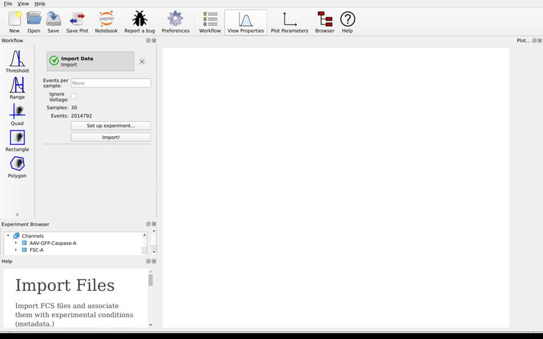
cu click 408 693; sleep 1; cu drag 1363 490 1100 490; sleep 2; cu screenshot /tmp/screen.png
{
"file_path": "/tmp/screen.png"
}/tmp/screen.png
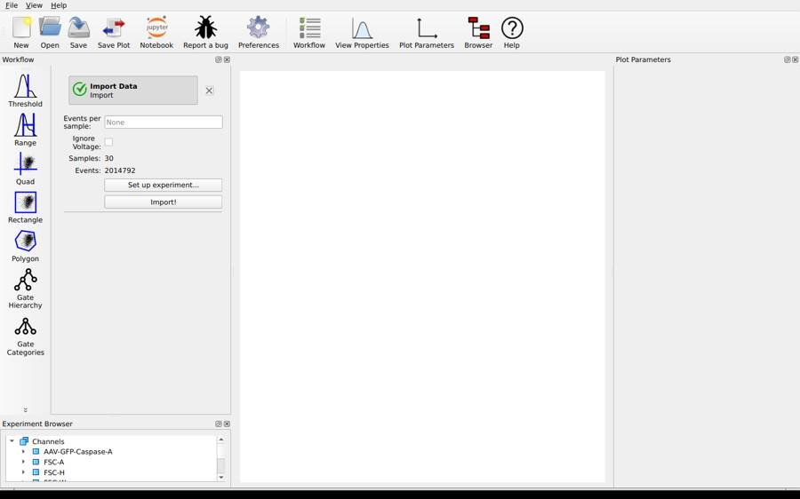
cu click 652 60; sleep 2; cu screenshot /tmp/screen.png
{
"file_path": "/tmp/screen.png"
}/tmp/screen.png
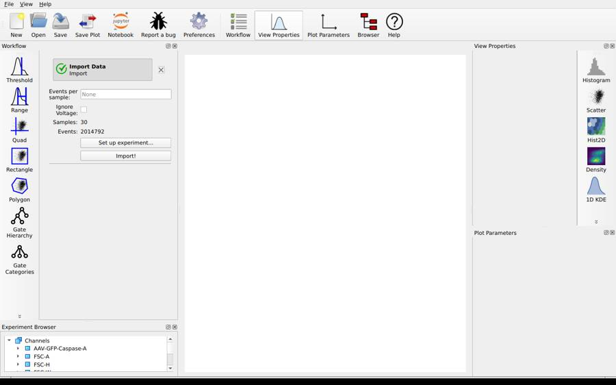
cu click 1393 160; sleep 2; cu screenshot /tmp/screen.png
{
"file_path": "/tmp/screen.png"
}/tmp/screen.png
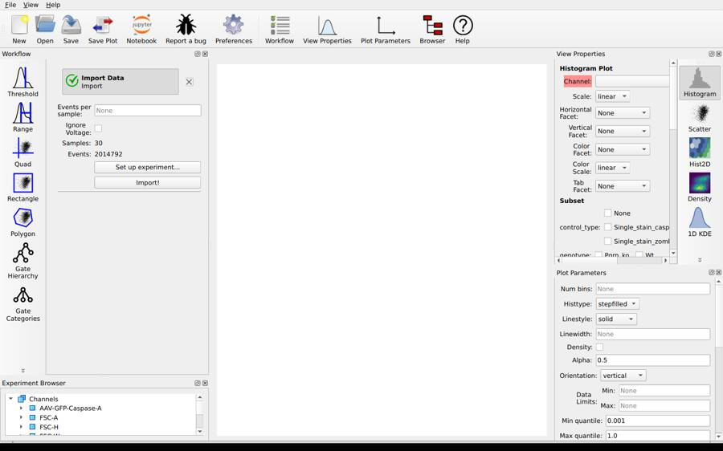
cu drag 1272 530 1272 740; sleep 1; cu click 1258 162; sleep 1; cu screenshot /tmp/screen.png
{
"file_path": "/tmp/screen.png"
}/tmp/screen.png
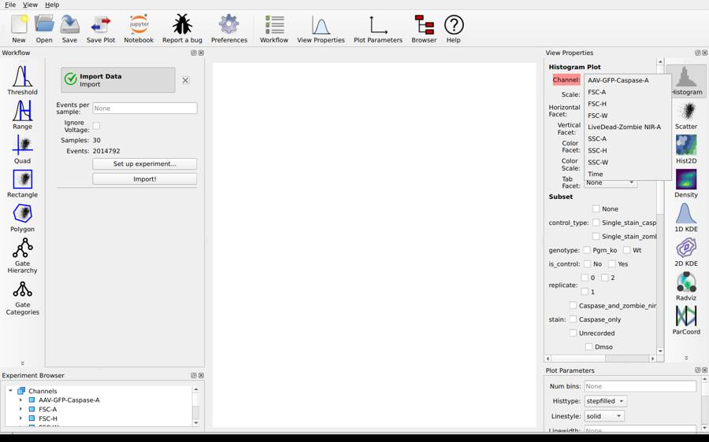
cu click 1210 354; sleep 3; cu click 1240 371; sleep 1; cu screenshot /tmp/screen.png
{
"file_path": "/tmp/screen.png"
}/tmp/screen.png
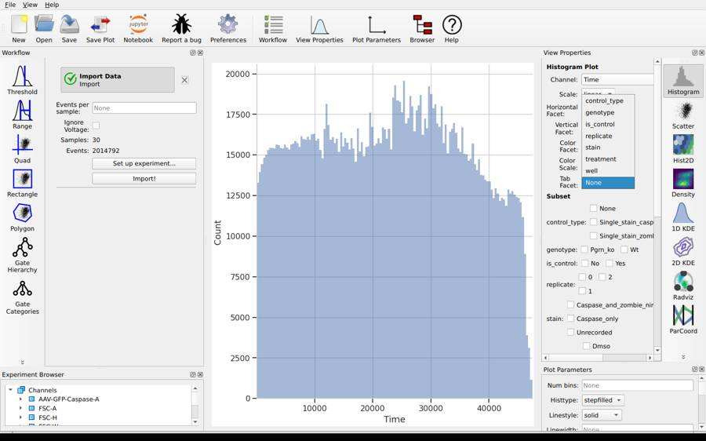
cu click 1207 348; sleep 4; cu screenshot /tmp/screen.png
{
"file_path": "/tmp/screen.png"
}/tmp/screen.png
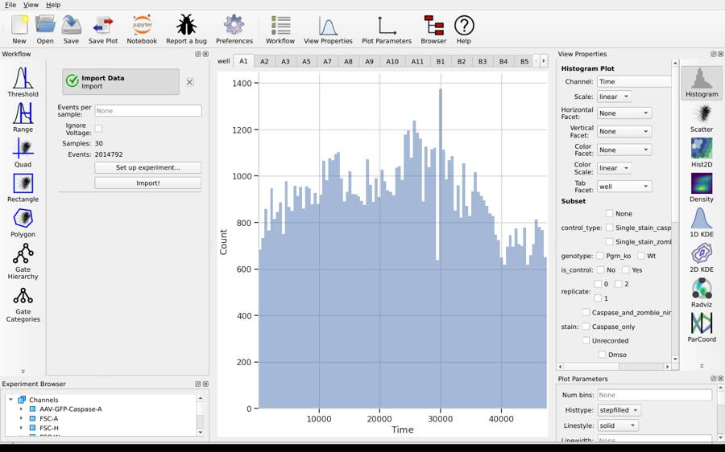
mkdir -p /tmp/qc && cd /tmp/qc && cu click 484 122; sleep 2; for i in $(seq 0 29); do cu screenshot /tmp/qc/time_$i.png >/dev/null; cu key Right; sleep 2.5; done; python3 - <<'E'
from PIL import Image
import glob
ims=[Image.open(f'/tmp/qc/time_{i}.png').crop((430,110,1092,872)) for i in range(30)]
for k in range(0,30,6):
W=Image.new('RGB',(662*3,762*2),'white')
for j,im in enumerate(ims[k:k+6]):
W.paste(im,((j%3)*662,(j//3)*762))
W=W.resize((662*3*2//3,762*2*2//3))
W.save(f'/tmp/qc/time_m{k//6}.png')
E
ls /tmp/qc | head -50{
"file_path": "/tmp/qc/time_m0.png"
}time_0.png time_1.png time_10.png time_11.png time_12.png time_13.png time_14.png time_15.png time_16.png time_17.png time_18.png time_19.png time_2.png time_20.png time_21.png time_22.png time_23.png time_24.png time_25.png time_26.png time_27.png time_28.png time_29.png time_3.png time_4.png time_5.png time_6.png time_7.png time_8.png time_9.png time_m0.png time_m1.png time_m2.png time_m3.png time_m4.png Shell cwd was reset to /task
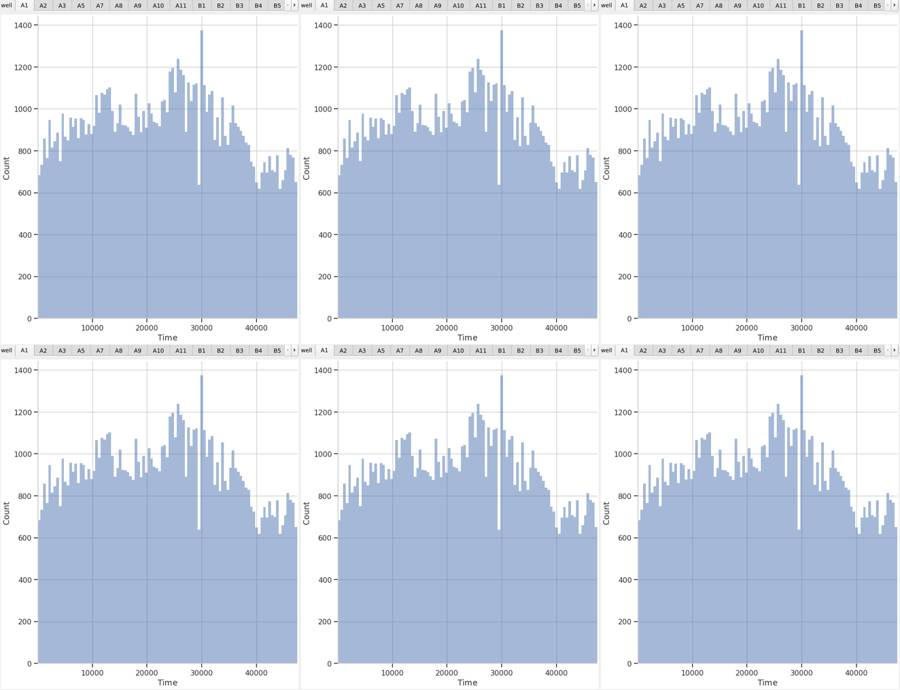
cd /tmp/qc; for i in 1 2 3 4 5 6 7 8 9 10 11 12 13 14 15 16 17 18 19 20; do cu click 1080 122; sleep 0.3; done; sleep 1; cu screenshot /tmp/screen.png
{
"file_path": "/tmp/screen.png"
}/tmp/screen.png Shell cwd was reset to /task
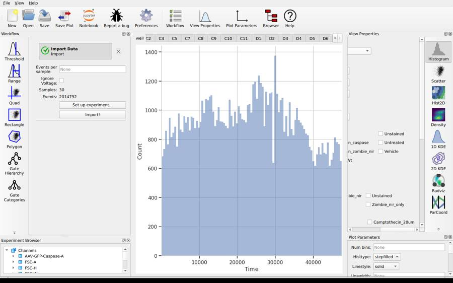
cd /tmp/qc; rm -f time_*.png
cap(){ # name x
cu click $2 122; sleep 2.5; cu screenshot /tmp/qc/$1.png >/dev/null; }
cap time_C2 471; cap time_C3 513; cap time_C5 555; cap time_C7 596; cap time_C8 638; cap time_C9 680; cap time_C10 725; cap time_C11 775; cap time_D1 821; cap time_D2 864; cap time_D3 907; cap time_D4 950; cap time_D5 992; cap time_D6 1035
cu click 1064 122; sleep 0.5; cu click 1064 122; sleep 1; cu screenshot /tmp/screen.png{
"file_path": "/tmp/screen.png"
}/tmp/screen.png Shell cwd was reset to /task
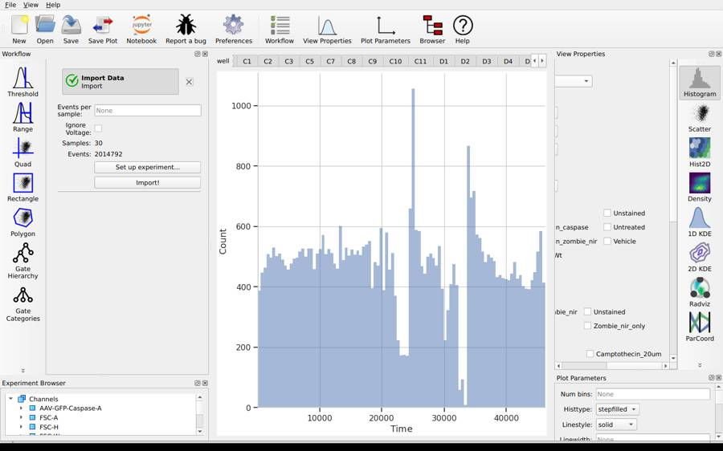
cd /tmp/qc
cap(){ cu click $2 122; sleep 2.5; cu screenshot /tmp/qc/$1.png >/dev/null; }
cap time_C1 492
cu click 1064 122; sleep 0.5; cu click 1064 122; sleep 1; cu screenshot /tmp/screen.png{
"file_path": "/tmp/screen.png"
}/tmp/screen.png Shell cwd was reset to /task
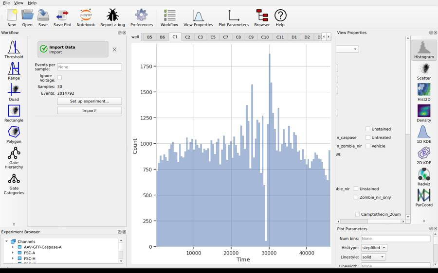
cd /tmp/qc
cap(){ cu click $2 122; sleep 2.5; cu screenshot /tmp/qc/$1.png >/dev/null; }
cap time_B6 534
for i in $(seq 1 20); do cu click 1064 122; sleep 0.3; done; sleep 1
cap time_A1 484; cap time_A2 525; cap time_A3 567; cap time_A5 609; cap time_A7 650; cap time_A8 692; cap time_A9 733; cap time_A10 779; cap time_A11 829; cap time_B1 875; cap time_B2 917; cap time_B3 958; cap time_B4 1000; cap time_B5 1042
cat > /tmp/qc/montage.py <<'E'
import sys
from PIL import Image
wells="A1 A2 A3 A5 A7 A8 A9 A10 A11 B1 B2 B3 B4 B5 B6 C1 C2 C3 C5 C7 C8 C9 C10 C11 D1 D2 D3 D4 D5 D6".split()
pre=sys.argv[1]
ims=[Image.open(f'/tmp/qc/{pre}_{w}.png').crop((430,110,1092,872)) for w in wells]
for k in range(0,30,6):
W=Image.new('RGB',(662*3,762*2),'white')
for j,im in enumerate(ims[k:k+6]):
W.paste(im,((j%3)*662,(j//3)*762))
W=W.resize((662*3*2//3,762*2*2//3))
W.save(f'/tmp/qc/{pre}_m{k//6}.png')
E
python3 /tmp/qc/montage.py time{
"file_path": "/tmp/qc/time_m0.png"
}{
"file_path": "/tmp/qc/time_m1.png"
}{
"file_path": "/tmp/qc/time_m2.png"
}Shell cwd was reset to /task
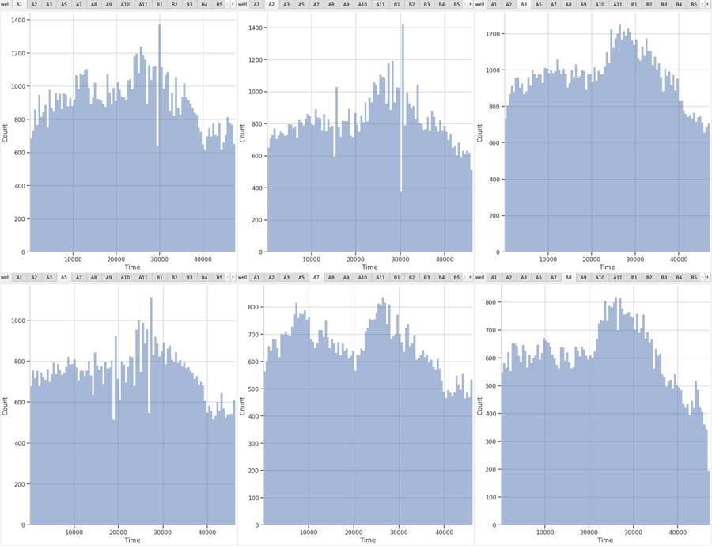
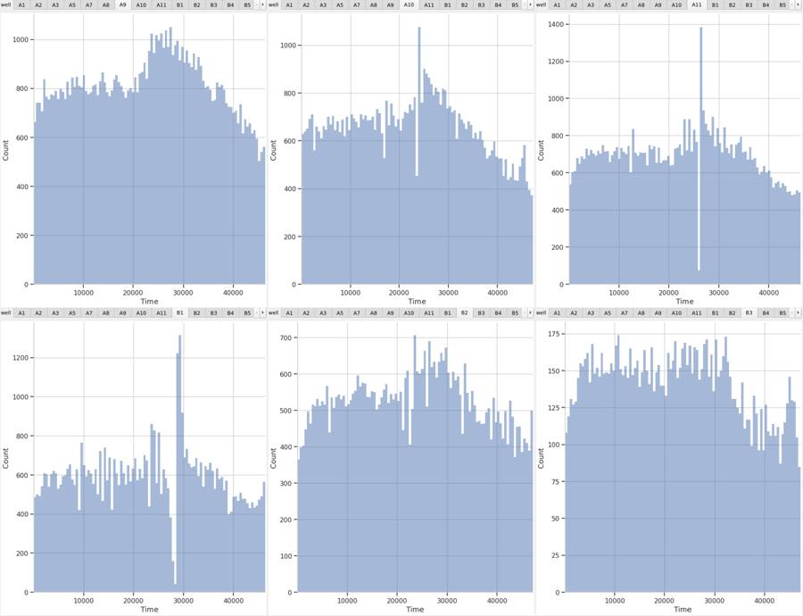
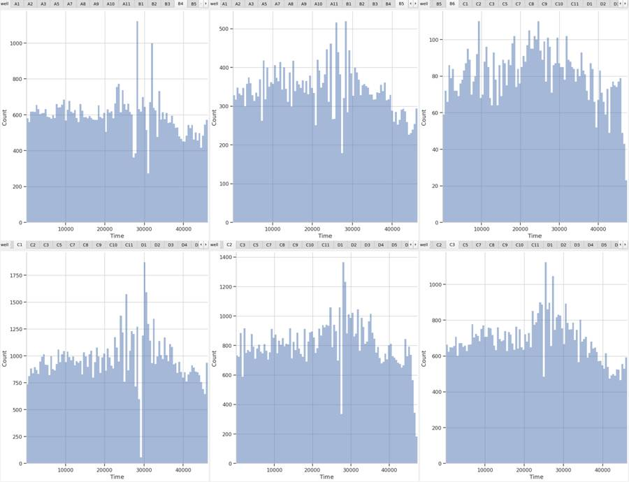
{
"file_path": "/tmp/qc/time_m3.png"
}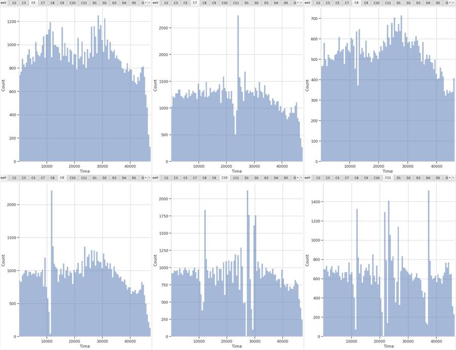
{
"file_path": "/tmp/qc/time_m4.png"
}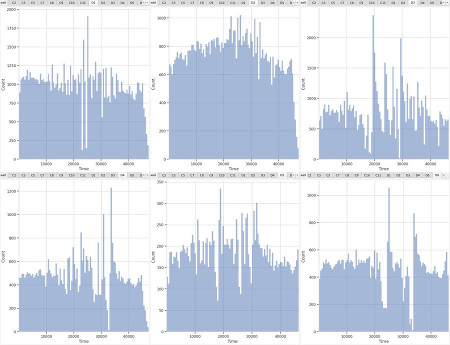
cd /task; python3 - <<'E'
import glob,os,re
def text(fn):
with open(fn,'rb') as f:
h=f.read(58)
ts=int(h[10:18]);te=int(h[18:26])
f.seek(ts); t=f.read(te-ts+1)
d=t[0:1]; parts=t[1:].split(d)
return dict(zip([p.decode('latin1') for p in parts[0::2]],[p.decode('latin1') for p in parts[1::2]])), h
fn='inputs/raw/Caspase_primaryneurons_caspase_Group_A1.fcs'
kv,h=text(fn)
print(h)
for k,v in kv.items(): print(k,'=',v[:200])
Eb'FCS3.1 58 1937 8192 3271627 0 0' $PAR = 9 $TOT = 90651 $MODE = L $DATATYPE = F $BYTEORD = 1,2,3,4 $P1F = NA $P1L = NA $P1S = Time $P1V = NA $P1N = Time $P1B = 32 $P1R = 67108864 $P1E = 0,0 $P2F = NA $P2L = 488 $P2S = FSC-A $P2V = 55 $P2N = FSC-A $P2B = 32 $P2R = 1048576 $P2E = 0,0 $P3F = NA $P3L = 488 $P3S = SSC-A $P3V = 350 $P3N = SSC-A $P3B = 32 $P3R = 1048576 $P3E = 0,0 $P4F = NA $P4L = 488 $P4S = AAV-GFP-Caspase-A $P4V = 250 $P4N = BL1-A $P4B = 32 $P4R = 1048576 $P4E = 0,0 $P5F = NA $P5L = 640 $P5S = LiveDead-Zombie NIR-A $P5V = 300 $P5N = RL3-A $P5B = 32 $P5R = 1048576 $P5E = 0,0 $P6F = NA $P6L = 488 $P6S = FSC-H $P6V = 55 $P6N = FSC-H $P6B = 32 $P6R = 1048576 $P6E = 0,0 $P7F = NA $P7L = 488 $P7S = SSC-H $P7V = 350 $P7N = SSC-H $P7B = 32 $P7R = 1048576 $P7E = 0,0 $P8F = NA $P8L = 488 $P8S = FSC-W $P8V = 55 $P8N = FSC-W $P8B = 32 $P8R = 1024 $P8E = 0,0 $P9F = NA $P9L = 488 $P9S = SSC-W $P9V = 350 $P9N = SSC-W $P9B = 32 $P9R = 1024 $P9E = 0,0 $CYT = 0A29009 Attune NxT Acoustic Focusing Cytometer (Lasers: BRV6Y) $SYS = SEA11065ATTUNE Microsoft Windows 10 Enterprise LTSC $SPILLOVER = 2,BL1-A,RL3-A,1.000000,0.000000,0.000000,1.000000 $BTIM = 14:47:52 $CELLS = NA $COM = NA $CYTSN = 2AFC228071019 $DATE = 20-Mar-2023 $ETIM = 14:48:40 $EXP = NA $FIL = A1.fcs $INST = NA $ORIGINALITY = Original $LOST = 0 $OP = Jeff Huang $PLATEID = NA $PLATENAME = Caspase_primaryneurons $PROJ = caspase $SMNO = Group $SRC = NA $TIMESTEP = 0.001 $VOL = 159000 $WELLID = A1 #CoincidentCount = 4247 #FLOWRATE = 200 #LASER1ASF = 1.05 #LASER1COLOR = Blue #LASER1DELAY = 1100 #LASER2ASF = 1.10 #LASER2COLOR = Red #LASER2DELAY = 1497 #LASER3ASF = 0.86 #LASER3COLOR = Violet #LASER3DELAY = 715 #LASER4ASF = 0.98 #LASER4COLOR = Yellow #LASER4DELAY = 303 #LASERCONFIG = BRV6Y #P1Label = NA #P1Target = NA #P4Label = Caspase #P4Target = AAV-GFP #P5Label = Zombie NIR #P5Target = LiveDead #PTDATE = 20-Mar-2023 #PTRESULT = Pass #TR1 = OR_FSC,25000 #WIDTHTHRESHOLD = 1000 #WINEXT = 0 HOSTID = SEA11065ATTUNE $BEGINDATA = 000000008192 $ENDDATA = 000003271627 $NEXTDATA = 000000000000 $BEGINSTEXT = 000000000000 $ENDSTEXT = 000000000000 $BEGINANALYSIS = 000000000000 $ENDANALYSIS = 000000000000
cd /task; python3 - <<'E'
import glob,os,re,csv
def text(fn):
with open(fn,'rb') as f:
h=f.read(58)
ts=int(h[10:18]);te=int(h[18:26])
f.seek(ts); t=f.read(te-ts+1)
d=t[0:1]; parts=t[1:].split(d)
return dict(zip([p.decode('latin1') for p in parts[0::2]],[p.decode('latin1') for p in parts[1::2]]))
rows=list(csv.DictReader(open('inputs/plate_layout.csv')))
base=text('inputs/raw/'+rows[0]['file'])
keys=['$TOT','$BTIM','$ETIM','$VOL','$WELLID','$FIL','#CoincidentCount','#FLOWRATE','$LOST','$DATE']
print('well',keys)
for r in rows:
kv=text('inputs/raw/'+r['file'])
sz=os.path.getsize('inputs/raw/'+r['file'])
diff={k:(base.get(k),v) for k,v in kv.items() if base.get(k)!=v and k not in keys+['$ENDDATA','$BEGINDATA']}
missing=[k for k in base if k not in kv]
print(r['well'],[kv.get(k) for k in keys],(sz-8192)/36, diff, missing)
Ewell ['$TOT', '$BTIM', '$ETIM', '$VOL', '$WELLID', '$FIL', '#CoincidentCount', '#FLOWRATE', '$LOST', '$DATE']
A1 ['90651', '14:47:52', '14:48:40', '159000', 'A1', 'A1.fcs', '4247', '200', '0', '20-Mar-2023'] 90651.22222222222 {} []
A2 ['81008', '14:49:07', '14:49:54', '155000', 'A2', 'A2.fcs', '3811', '200', '0', '20-Mar-2023'] 81008.22222222222 {} []
A3 ['95933', '14:50:20', '14:51:08', '157000', 'A3', 'A3.fcs', '5071', '200', '0', '20-Mar-2023'] 95933.22222222222 {} []
A5 ['73753', '14:51:35', '14:52:22', '155000', 'A5', 'A5.fcs', '4144', '200', '0', '20-Mar-2023'] 73753.22222222222 {} []
A7 ['64975', '14:52:49', '14:53:36', '155000', 'A7', 'A7.fcs', '3144', '200', '0', '20-Mar-2023'] 64975.22222222222 {} []
A8 ['60216', '14:54:02', '14:54:50', '158000', 'A8', 'A8.fcs', '2898', '200', '0', '20-Mar-2023'] 60216.22222222222 {} []
A9 ['80278', '14:55:17', '14:56:04', '155000', 'A9', 'A9.fcs', '3428', '200', '0', '20-Mar-2023'] 80278.22222222222 {} []
A10 ['64936', '14:56:30', '14:57:18', '158000', 'A10', 'A10.fcs', '2861', '200', '0', '20-Mar-2023'] 64936.22222222222 {} []
A11 ['68296', '14:57:45', '14:58:32', '155000', 'A11', 'A11.fcs', '3380', '200', '0', '20-Mar-2023'] 68296.22222222222 {} []
B1 ['58310', '14:59:00', '14:59:47', '155000', 'B1', 'B1.fcs', '2668', '200', '0', '20-Mar-2023'] 58310.22222222222 {} []
B2 ['51930', '15:00:13', '15:01:01', '158000', 'B2', 'B2.fcs', '1945', '200', '0', '20-Mar-2023'] 51930.22222222222 {} []
B3 ['13995', '15:01:27', '15:02:15', '158000', 'B3', 'B3.fcs', '134', '200', '0', '20-Mar-2023'] 13995.222222222223 {} []
B4 ['58782', '15:02:42', '15:03:29', '155000', 'B4', 'B4.fcs', '1866', '200', '0', '20-Mar-2023'] 58782.22222222222 {} []
B5 ['33754', '15:03:56', '15:04:43', '155000', 'B5', 'B5.fcs', '1077', '200', '0', '20-Mar-2023'] 33754.22222222222 {} []
B6 ['8004', '15:05:09', '15:05:57', '159000', 'B6', 'B6.fcs', '81', '200', '0', '20-Mar-2023'] 8004.222222222223 {} []
C1 ['95817', '15:06:24', '15:07:11', '155000', 'C1', 'C1.fcs', '6153', '200', '0', '20-Mar-2023'] 95817.22222222222 {} []
C2 ['80166', '15:07:37', '15:08:25', '159000', 'C2', 'C2.fcs', '4357', '200', '0', '20-Mar-2023'] 80166.22222222222 {} []
C3 ['68270', '15:08:52', '15:09:39', '155000', 'C3', 'C3.fcs', '3180', '200', '0', '20-Mar-2023'] 68270.22222222222 {} []
C5 ['88646', '15:10:05', '15:10:53', '159000', 'C5', 'C5.fcs', '5380', '200', '0', '20-Mar-2023'] 88646.22222222222 {} []
C7 ['119052', '15:11:19', '15:12:07', '159000', 'C7', 'C7.fcs', '9110', '200', '0', '20-Mar-2023'] 119052.22222222222 {} []
C8 ['52267', '15:12:35', '15:13:21', '155000', 'C8', 'C8.fcs', '2542', '200', '0', '20-Mar-2023'] 52267.22222222222 {} []
C9 ['92282', '15:13:48', '15:14:36', '159000', 'C9', 'C9.fcs', '5852', '200', '0', '20-Mar-2023'] 92282.22222222222 {} []
C10 ['88797', '15:15:02', '15:15:50', '158000', 'C10', 'C10.fcs', '4556', '200', '0', '20-Mar-2023'] 88797.22222222222 {} []
C11 ['63651', '15:16:17', '15:17:04', '155000', 'C11', 'C11.fcs', '2901', '200', '0', '20-Mar-2023'] 63651.22222222222 {} []
D1 ['97824', '15:17:30', '15:18:18', '159000', 'D1', 'D1.fcs', '4462', '200', '0', '20-Mar-2023'] 97824.22222222222 {} []
D2 ['73937', '15:18:44', '15:19:32', '159000', 'D2', 'D2.fcs', '2841', '200', '0', '20-Mar-2023'] 73937.22222222222 {} []
D3 ['77334', '15:19:59', '15:20:46', '155000', 'D3', 'D3.fcs', '3701', '200', '0', '20-Mar-2023'] 77334.22222222222 {} []
D4 ['46763', '15:21:12', '15:22:00', '158000', 'D4', 'D4.fcs', '1601', '200', '0', '20-Mar-2023'] 46763.22222222222 {} []
D5 ['18412', '15:22:27', '15:23:15', '155000', 'D5', 'D5.fcs', '477', '200', '0', '20-Mar-2023'] 18412.222222222223 {} []
D6 ['46753', '15:23:41', '15:24:28', '155000', 'D6', 'D6.fcs', '1579', '200', '0', '20-Mar-2023'] 46753.22222222222 {} []cu click 1393 370; sleep 2; for i in 1 2 3 4 5 6 7 8; do cu click 1112 730; done; sleep 1; cu screenshot /tmp/screen.png
{
"file_path": "/tmp/screen.png"
}/tmp/screen.png
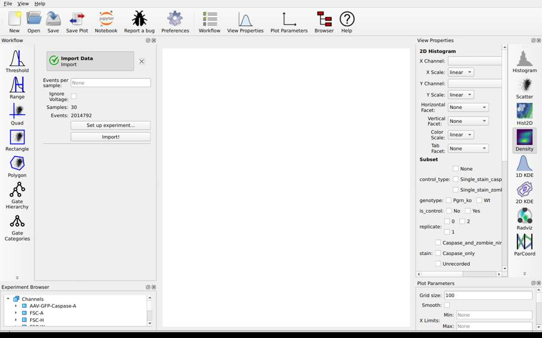
cu click 1260 162; sleep 1; cu click 1215 187; sleep 1; cu click 1260 222; sleep 1; cu screenshot /tmp/screen.png
{
"file_path": "/tmp/screen.png"
}/tmp/screen.png
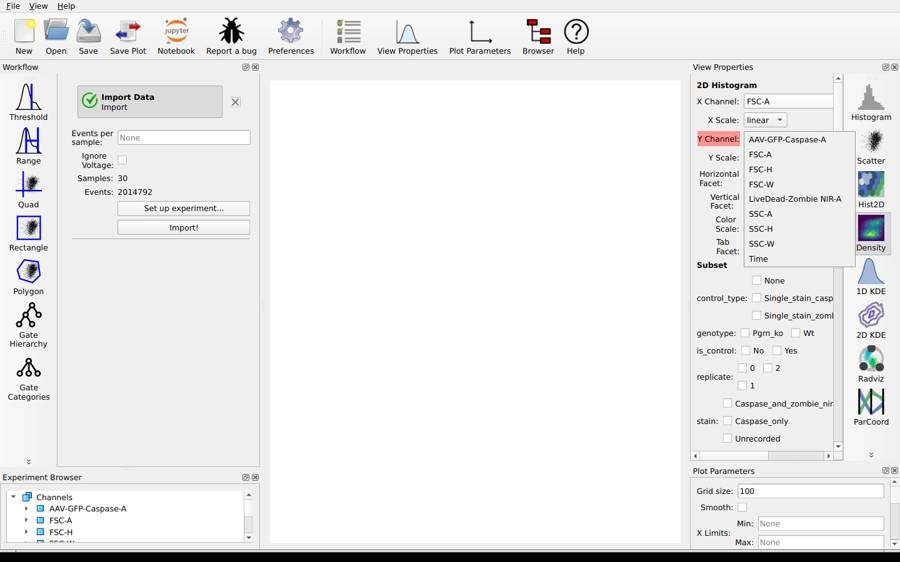
cu click 1217 342; sleep 6; cu screenshot /tmp/screen.png
{
"file_path": "/tmp/screen.png"
}/tmp/screen.png
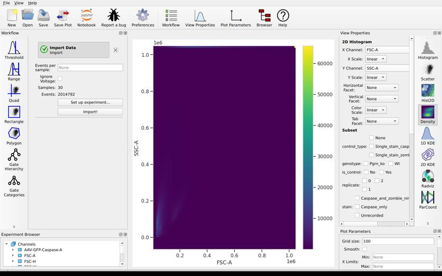
cu click 1225 359; sleep 1; cu screenshot /tmp/screen.png
{
"file_path": "/tmp/screen.png"
}/tmp/screen.png
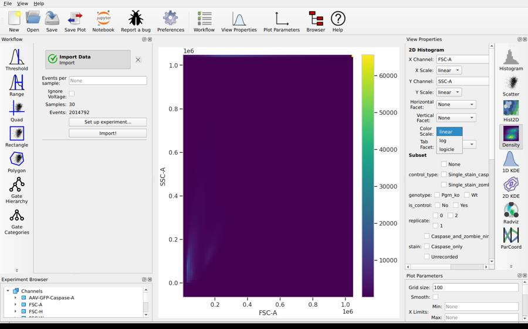
cu click 1210 385; sleep 6; cu screenshot /tmp/screen.png
{
"file_path": "/tmp/screen.png"
}/tmp/screen.png
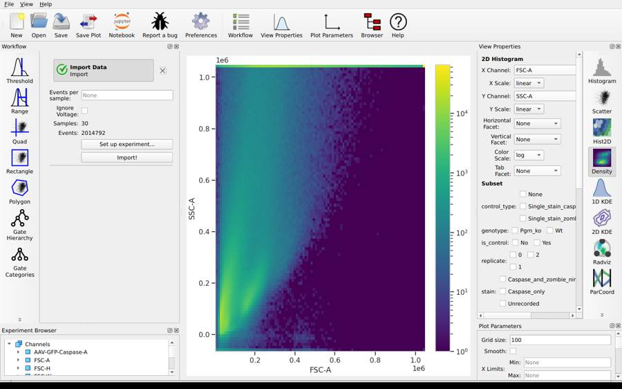
cu click 1313 868; cu type "500000"; cu key Return; sleep 1; cu scroll 1260 830 down 3; sleep 1; cu screenshot /tmp/screen.png
{
"file_path": "/tmp/screen.png"
}/tmp/screen.png
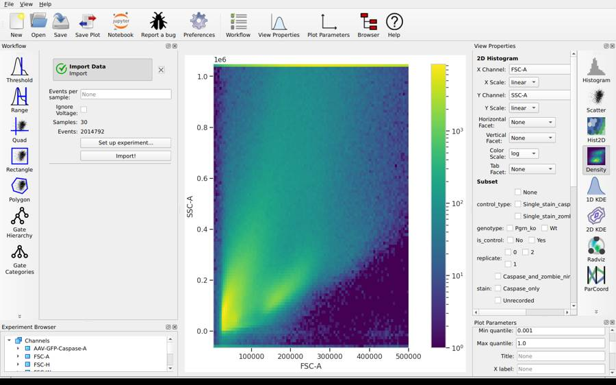
cu drag 1272 741 1272 500; sleep 1; cu scroll 1260 700 up 10; sleep 1; cu screenshot /tmp/screen.png
{
"file_path": "/tmp/screen.png"
}/tmp/screen.png
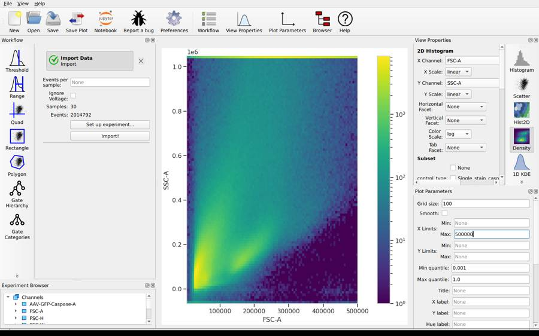
cu click 1313 688; cu type "600000"; cu key Return; sleep 2; cu click 1243 395; sleep 1; cu click 1215 372; sleep 5; cu screenshot /tmp/screen.png
{
"file_path": "/tmp/screen.png"
}/tmp/screen.png
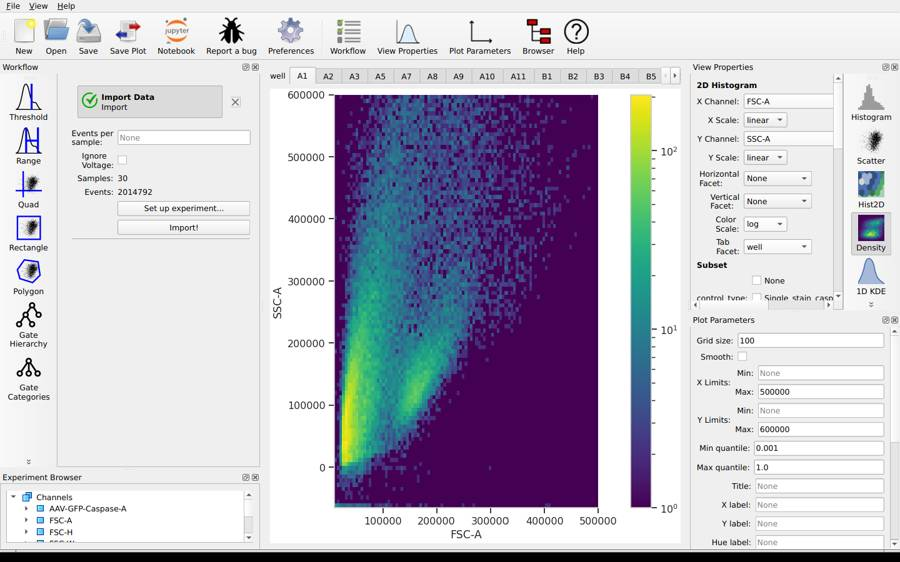
cat > /tmp/qc/capall.sh <<'E'
#!/bin/bash
# usage: capall.sh prefix [wait]
p=$1; w=${2:-2.5}
cap(){ cu click $2 122; sleep $w; cu screenshot /tmp/qc/${p}_$1.png >/dev/null; }
for i in $(seq 1 20); do cu click 1064 122; sleep 0.15; done; sleep 0.5
cap A1 484; cap A2 525; cap A3 567; cap A5 609; cap A7 650; cap A8 692; cap A9 733; cap A10 779; cap A11 829; cap B1 875; cap B2 917; cap B3 958; cap B4 1000; cap B5 1042
for i in $(seq 1 20); do cu click 1080 122; sleep 0.15; done; sleep 0.5
cap C2 471; cap C3 513; cap C5 555; cap C7 596; cap C8 638; cap C9 680; cap C10 725; cap C11 775; cap D1 821; cap D2 864; cap D3 907; cap D4 950; cap D5 992; cap D6 1035
cu click 1064 122; sleep 0.3; cu click 1064 122; sleep 0.5
cap C1 492
cu click 1064 122; sleep 0.3; cu click 1064 122; sleep 0.5
cap B6 534
python3 /tmp/qc/montage.py $p
E
chmod +x /tmp/qc/capall.sh; /tmp/qc/capall.sh fscssc 2.5{
"file_path": "/tmp/qc/fscssc_m0.png"
}{
"file_path": "/tmp/qc/fscssc_m1.png"
}{
"file_path": "/tmp/qc/fscssc_m2.png"
}(Bash completed with no output)
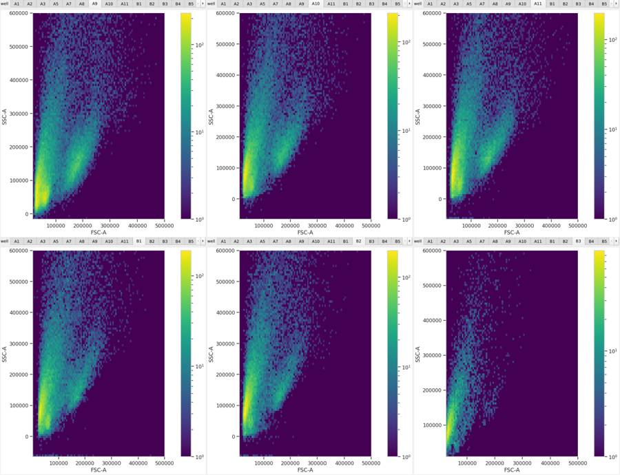
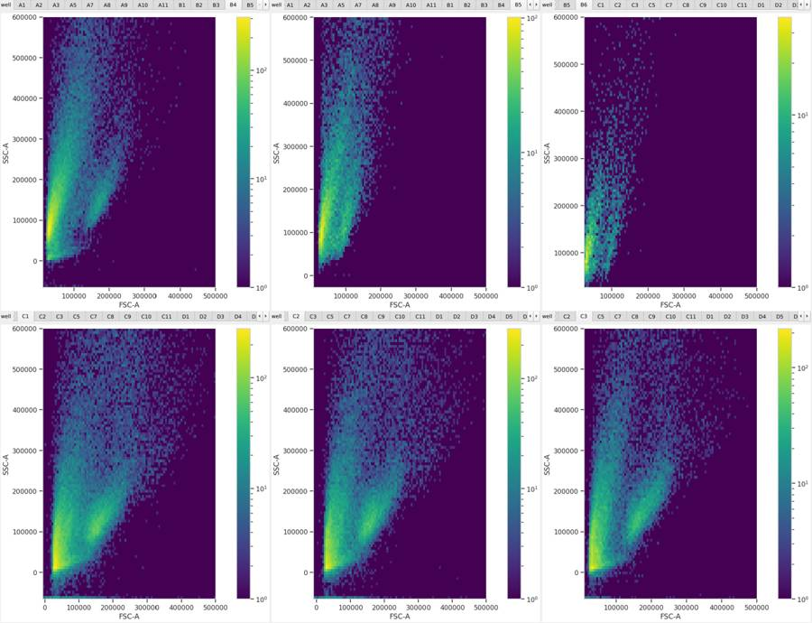
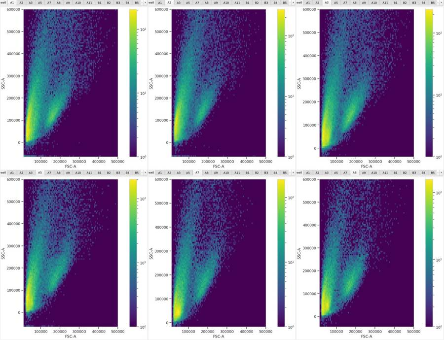
{
"file_path": "/tmp/qc/fscssc_m3.png"
}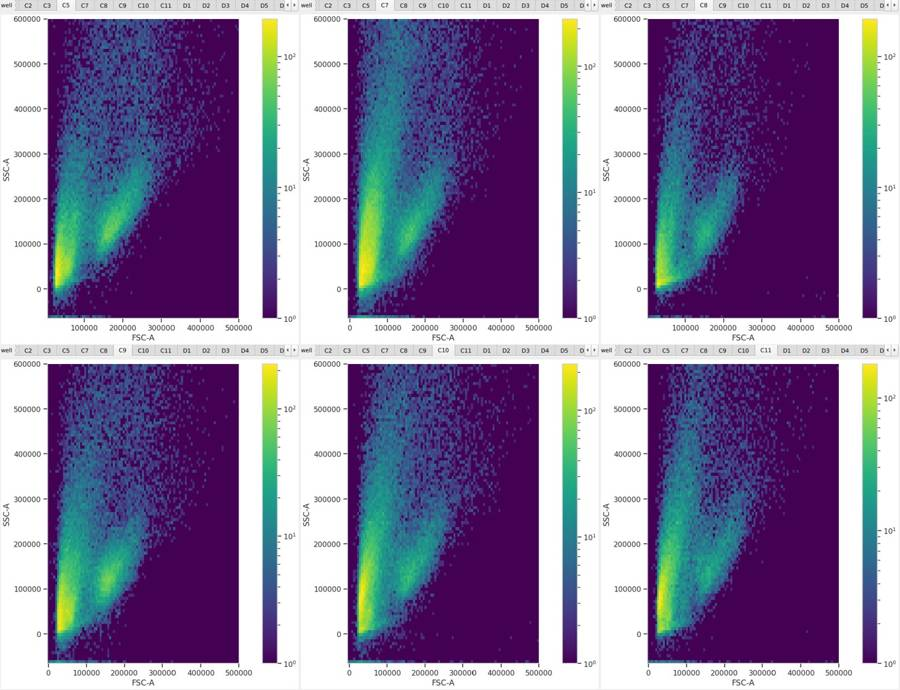
{
"file_path": "/tmp/qc/fscssc_m4.png"
}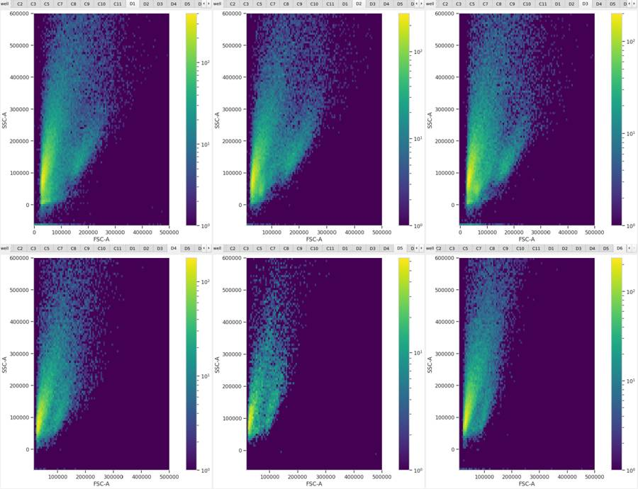
cu click 45 440; sleep 3; cu screenshot /tmp/screen.png
{
"file_path": "/tmp/screen.png"
}/tmp/screen.png
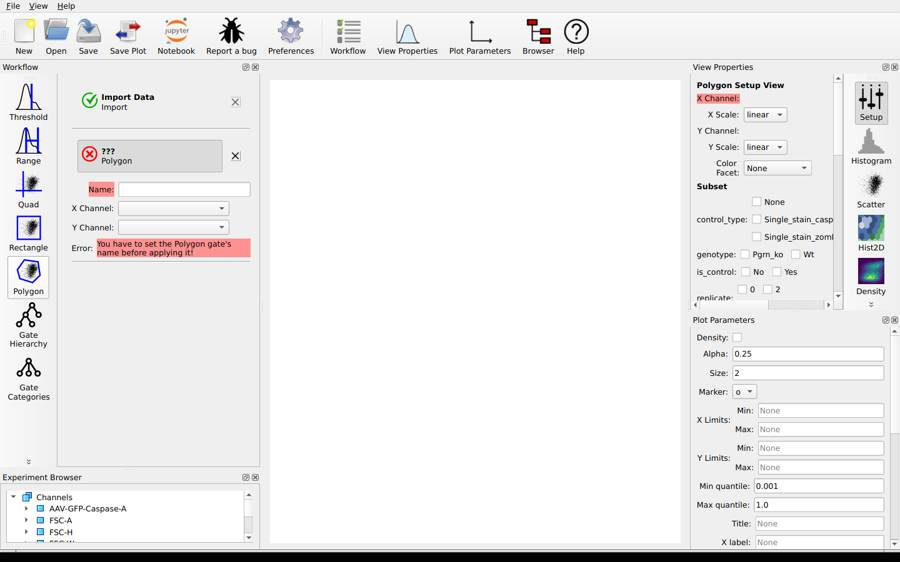
cu click 295 303; cu type "Cells"; cu key Tab; sleep 0.5; cu click 277 334; sleep 1; cu screenshot /tmp/screen.png
{
"file_path": "/tmp/screen.png"
}/tmp/screen.png
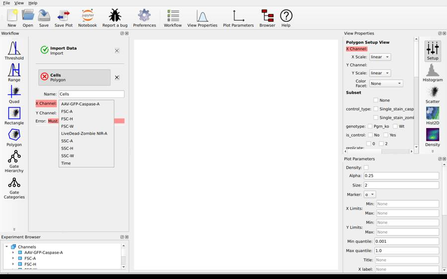
cu click 215 359; sleep 1; cu click 1180 540; sleep 0.5; cu click 1313 688; cu type "500000"; cu key Return; cu click 1313 748; cu type "600000"; cu key Return; sleep 0.5; cu click 277 364; sleep 1; cu screenshot /tmp/screen.png
{
"file_path": "/tmp/screen.png"
}/tmp/screen.png
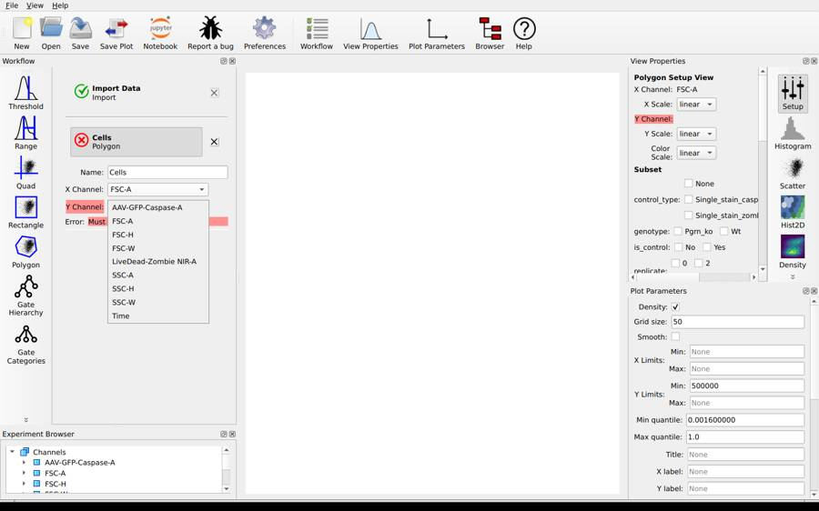
cu click 215 484; sleep 1
setf(){ cu click $1 $2; cu key ctrl+a; if [ -n "$3" ]; then cu type "$3"; else cu key BackSpace; fi; cu key Return; sleep 0.5; }
setf 1310 740 "0.001"; setf 1313 680 ""; setf 1313 650 "500000"; setf 1313 710 "600000"; sleep 6; cu screenshot /tmp/screen.png{
"file_path": "/tmp/screen.png"
}/tmp/screen.png
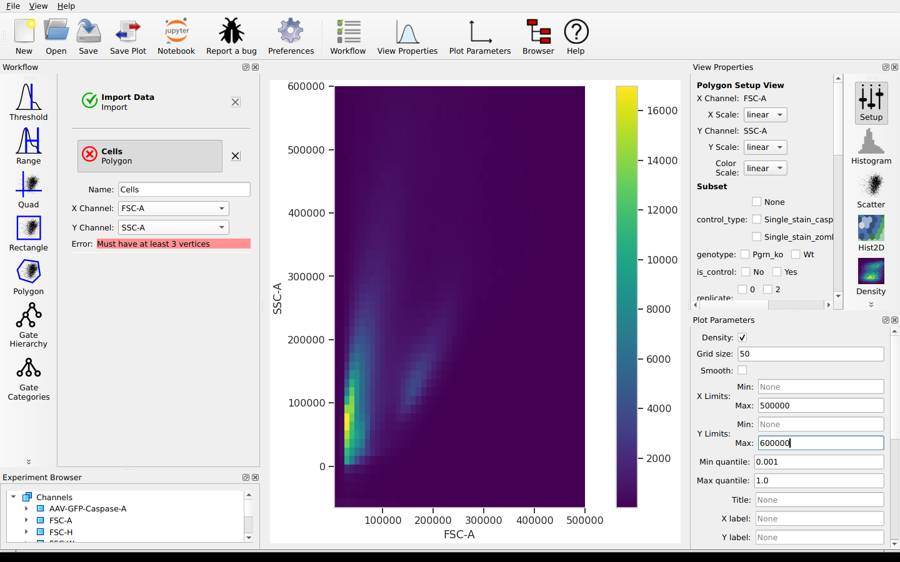
setf(){ cu click $1 $2; cu key ctrl+a; if [ -n "$3" ]; then cu type "$3"; else cu key BackSpace; fi; cu key Return; sleep 0.5; }
cu click 1225 269; sleep 0.7; cu click 1210 295; sleep 2; setf 1295 567 "100"; setf 1313 620 "0"; setf 1313 680 "0"; sleep 6; cu screenshot /tmp/screen.png{
"file_path": "/tmp/screen.png"
}/tmp/screen.png
for p in "624 751" "653 762" "704 717" "763 622" "814 509" "814 419" "754 419" "683 521"; do cu click $p; sleep 0.8; done; cu click 636 656 double; sleep 8; cu screenshot /tmp/screen.png
{
"file_path": "/tmp/screen.png"
}/tmp/screen.png
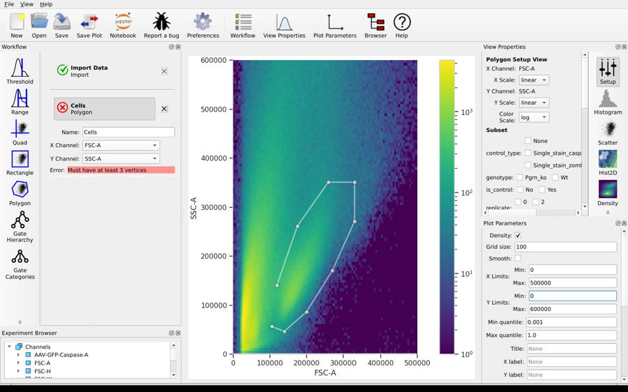
cu click 624 751; sleep 10; cu screenshot /tmp/screen.png
{
"file_path": "/tmp/screen.png"
}/tmp/screen.png
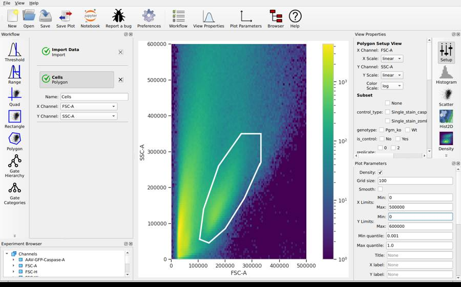
cu click 20 10; sleep 1; cu screenshot /tmp/screen.png
{
"file_path": "/tmp/screen.png"
}/tmp/screen.png
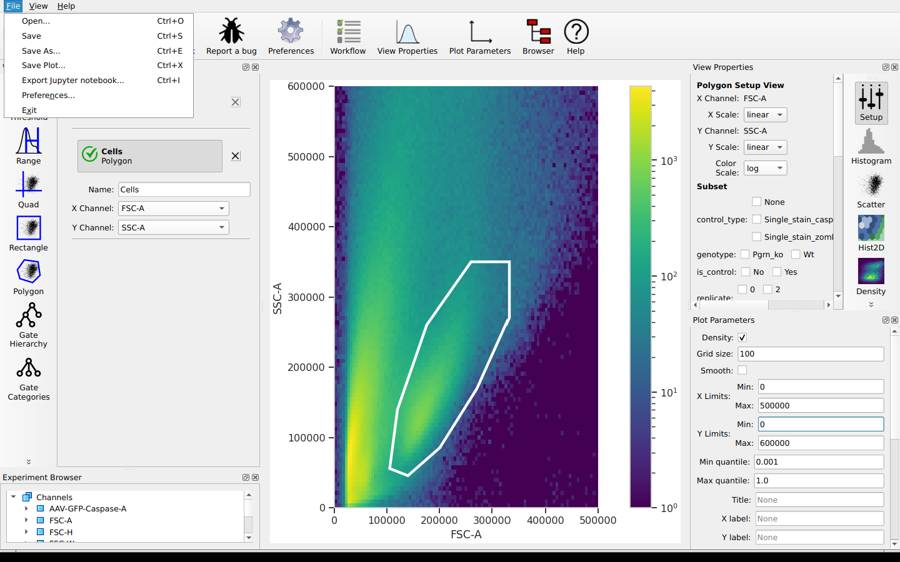
cu click 65 81; sleep 2; cu screenshot /tmp/screen.png
{
"file_path": "/tmp/screen.png"
}/tmp/screen.png
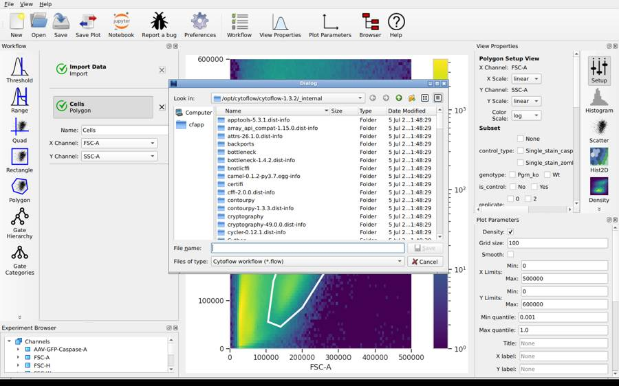
cu click 715 578; cu paste "/task/outputs/workflow.flow"; sleep 0.5; cu key Return; sleep 3; cu screenshot /tmp/screen.png; ls -la /task/outputs; grep -n -A25 "polygon" /task/outputs/workflow.flow | head -60
/tmp/screen.png total 48 drwxrwsrwx 2 agent task 4096 Nov 10 18:59 . drwxr-xr-x 4 root root 4096 Nov 5 08:15 .. -rw-rw-r-- 1 cfapp task 37200 Nov 10 18:59 workflow.flow 1362: current_view: &id003 !polygon-view;3 1363- current_plot: null 1364- huefacet: '' 1365- huescale: log 1366: op: &id002 !polygon;1 1367- name: Cells 1368- vertices: 1369- - !!python/tuple 1370- - 105568.79972577307 1371- - 55870.18856358935 1372- - !!python/tuple 1373- - 140168.3966470127 1374- - 45692.08623691738 1375- - !!python/tuple 1376- - 200717.69125918206 1377- - 85479.21351390783 1378- - !!python/tuple 1379- - 271152.58499170555 1380- - 169679.87821637598 1381- - !!python/tuple 1382- - 331701.8796038749 1383- - 270535.6194533983 1384- - !!python/tuple 1385- - 331701.8796038749 1386- - 350109.87400737917 1387- - !!python/tuple 1388- - 260031.2859813071 1389- - 350109.87400737917 1390- - !!python/tuple 1391- - 176003.6934582966 -- 1403: plot_params: !polygon-params;1 1404- alpha: 0.25 1405- col_wrap: null 1406- density: true 1407- despine: true 1408- gridsize: 100 1409- huelabel: '' 1410- legend: true 1411- marker: o 1412- max_quantile: 1.0 1413- min_quantile: 0.001 1414- s: 2 1415- sharex: true 1416- sharey: true 1417- smoothed: false 1418- smoothed_sigma: 1.0 1419- sns_context: notebook 1420- sns_style: whitegrid 1421- title: '' 1422- xlabel: '' 1423- xlim: !!python/tuple 1424- - 0.0 1425- - 500000.0 1426- ylabel: '' 1427- ylim: !!python/tuple 1428- - 0.0
cu click 45 440; sleep 3; cu click 295 390; sleep 0.5; cu screenshot /tmp/screen.png
{
"file_path": "/tmp/screen.png"
}/tmp/screen.png
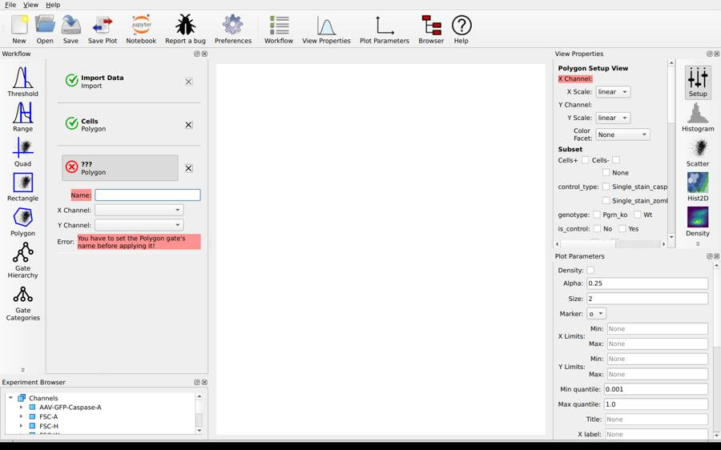
cu type "Single_Cells"; cu key Tab; sleep 0.5; cu click 1168 320; sleep 0.5; cu click 1180 540; sleep 0.5; cu click 277 420; sleep 1; cu click 215 565; sleep 1; cu click 277 450; sleep 1; cu screenshot /tmp/screen.png
{
"file_path": "/tmp/screen.png"
}/tmp/screen.png
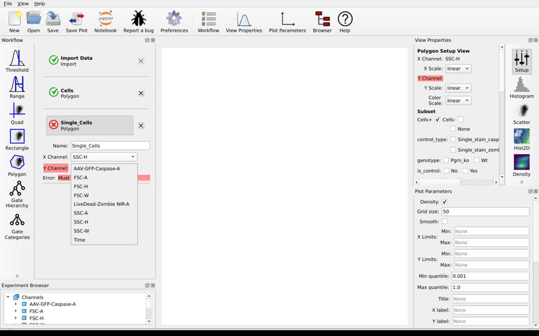
cu click 215 570; sleep 1; cu click 1225 269; sleep 0.7; cu click 1210 295; sleep 1
setf(){ cu click $1 $2; cu key ctrl+a; if [ -n "$3" ]; then cu type "$3"; else cu key BackSpace; fi; cu key Return; sleep 0.5; }
setf 1295 567 "100"; sleep 6; cu screenshot /tmp/screen.png{
"file_path": "/tmp/screen.png"
}/tmp/screen.png
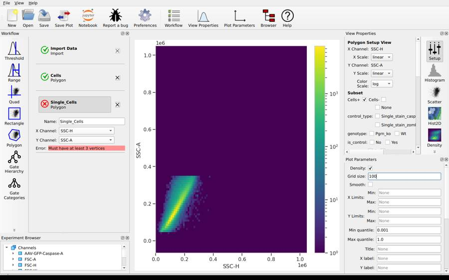
setf(){ cu click $1 $2; cu key ctrl+a; if [ -n "$3" ]; then cu type "$3"; else cu key BackSpace; fi; cu key Return; sleep 0.5; }
setf 1313 620 "0"; setf 1313 650 "400000"; setf 1313 680 "0"; setf 1313 710 "400000"; sleep 6; cu screenshot /tmp/screen.png{
"file_path": "/tmp/screen.png"
}/tmp/screen.png
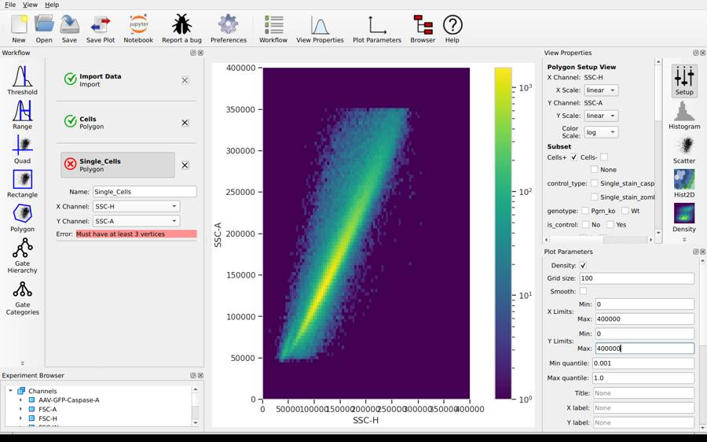
for p in "556 745" "614 745" "841 206" "769 206"; do cu click $p; sleep 0.8; done; cu click 556 745; sleep 10; cu screenshot /tmp/screen.png
{
"file_path": "/tmp/screen.png"
}/tmp/screen.png
cu click 20 10; sleep 0.7; cu click 50 57; sleep 2; ls -la /task/outputs; cu click 1393 440; sleep 2; cu screenshot /tmp/screen.png
{
"file_path": "/tmp/screen.png"
}total 60 drwxrwsrwx 2 agent task 4096 Nov 10 18:59 . drwxr-xr-x 4 root root 4096 Nov 5 08:15 .. -rw-rw-r-- 1 cfapp task 50754 Nov 10 19:01 workflow.flow /tmp/screen.png
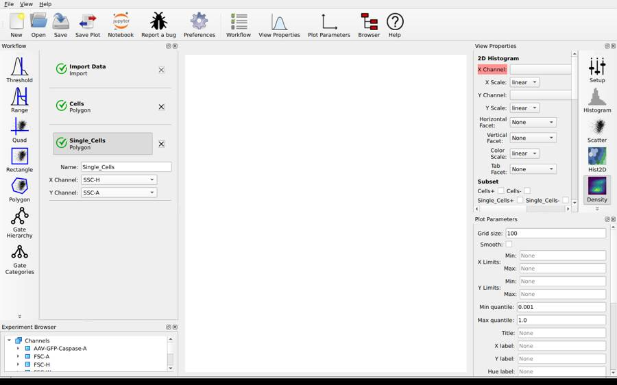
cu click 1213 468; sleep 0.5; cu click 1225 192; sleep 0.7; cu click 1215 241; sleep 0.7; cu click 1225 359; sleep 0.7; cu click 1210 385; sleep 0.7; cu click 1243 395; sleep 0.7; cu click 1215 372; sleep 0.7; cu click 1260 162; sleep 0.7; cu click 1270 259; sleep 0.7; cu click 1260 222; sleep 0.7; cu click 1217 343; sleep 8; cu screenshot /tmp/screen.png
{
"file_path": "/tmp/screen.png"
}/tmp/screen.png
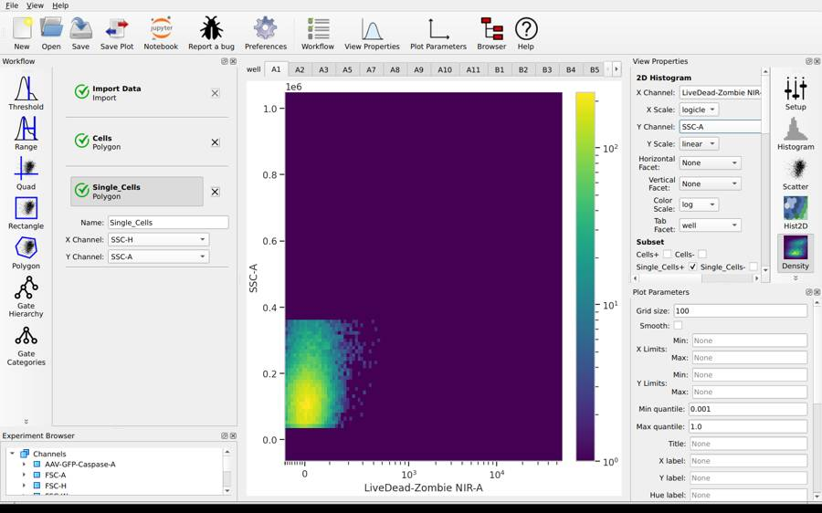
setf(){ cu click $1 $2; cu key ctrl+a; if [ -n "$3" ]; then cu type "$3"; else cu key BackSpace; fi; cu key Return; sleep 0.5; }
setf 1313 598 "-500"; setf 1313 628 "1000000"; setf 1313 658 "0"; setf 1313 688 "400000"; sleep 5; /tmp/qc/capall.sh zomb 2.5{
"file_path": "/tmp/qc/zomb_m0.png"
}{
"file_path": "/tmp/qc/zomb_m1.png"
}{
"file_path": "/tmp/qc/zomb_m2.png"
}(Bash completed with no output)
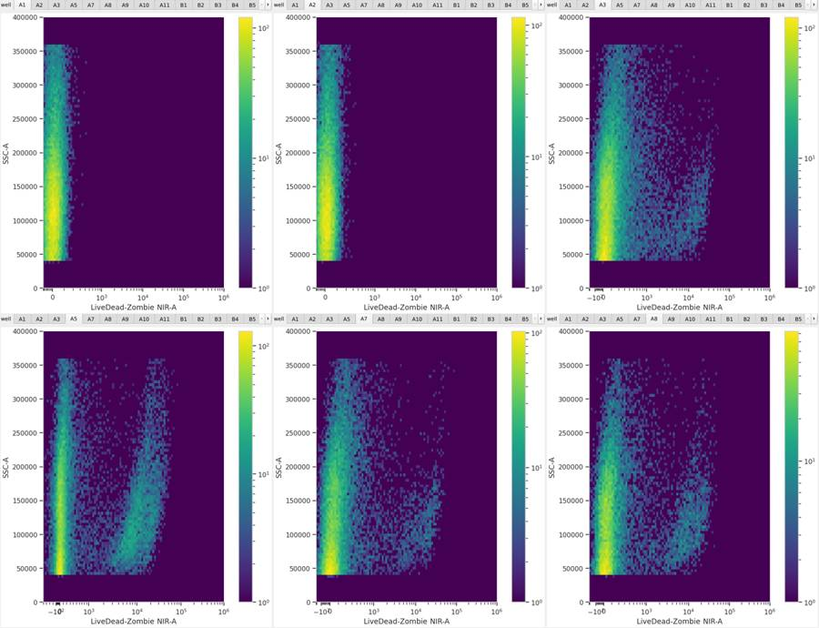
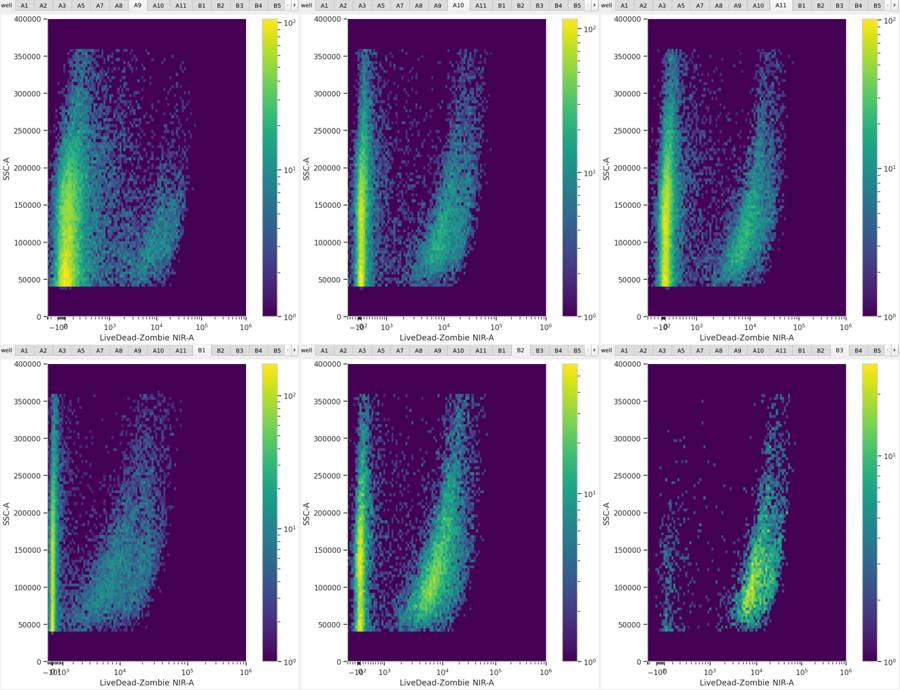
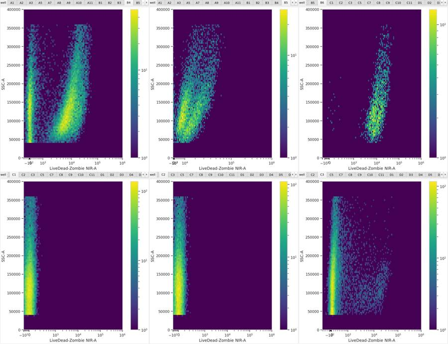
thinking
The "Zombie NIR only" wells (A2, C2) show no Zombie-bright cells while the "caspase only" wells (A3, C3) do, so those control labels may be swapped. I'm checking the caspase channel to confirm before viewing the remaining wells.
{
"file_path": "/tmp/qc/zomb_m3.png"
}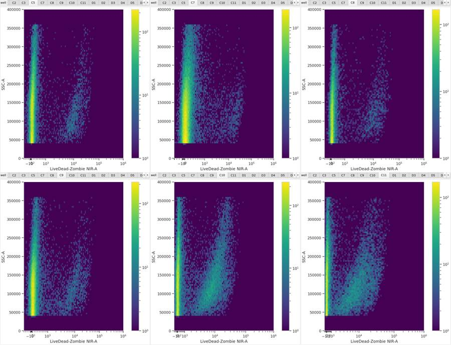
{
"file_path": "/tmp/qc/zomb_m4.png"
}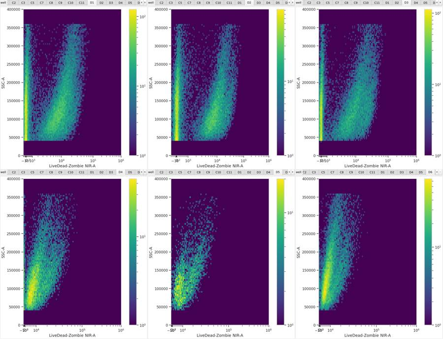
cu click 1260 162; sleep 1; cu screenshot /tmp/screen.png
{
"file_path": "/tmp/screen.png"
}/tmp/screen.png
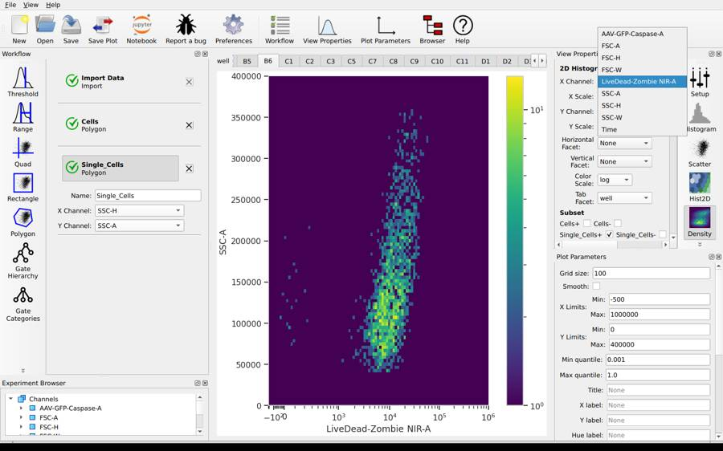
cu click 1260 67; sleep 6; /tmp/qc/capall.sh casp 2.5
{
"file_path": "/tmp/qc/casp_m0.png"
}{
"file_path": "/tmp/qc/casp_m1.png"
}{
"file_path": "/tmp/qc/casp_m2.png"
}(Bash completed with no output)
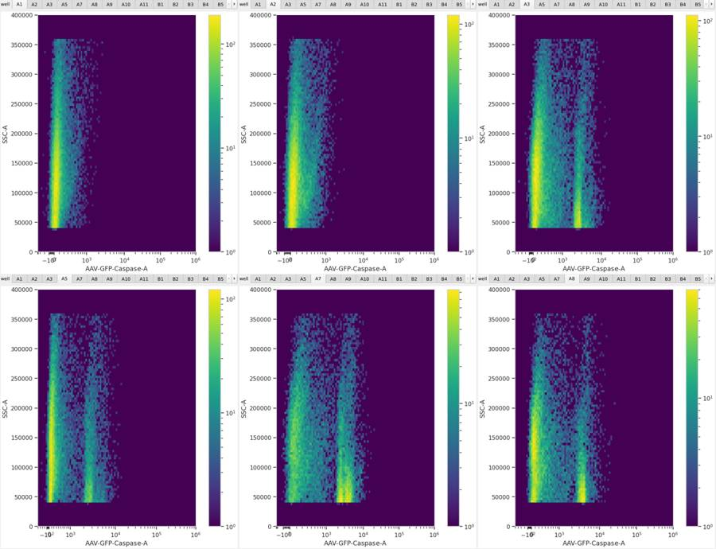
thinking
The caspase plots show that A2 and C2 are essentially unstained, while A3 and C3 carry both populations, so the single-stain controls don't match the plate map. I'm checking the rest of the plate next.
{
"file_path": "/tmp/qc/casp_m3.png"
}{
"file_path": "/tmp/qc/casp_m4.png"
}cu click 45 370; sleep 3; cu screenshot /tmp/screen.png
{
"file_path": "/tmp/screen.png"
}/tmp/screen.png
cu click 295 477; cu type "Live"; cu key Tab; sleep 0.5; cu click 277 507; sleep 1; cu screenshot /tmp/screen.png
{
"file_path": "/tmp/screen.png"
}/tmp/screen.png
cu click 270 603; sleep 1; cu click 1180 540; sleep 0.5; for i in 1 2 3 4 5 6; do cu click 1112 488; done; sleep 1; cu screenshot /tmp/screen.png
{
"file_path": "/tmp/screen.png"
}/tmp/screen.png
setf(){ cu click $1 $2; cu key ctrl+a; if [ -n "$3" ]; then cu type "$3"; else cu key BackSpace; fi; cu key Return; sleep 0.5; }
cu click 1213 342; sleep 0.5; cu click 1225 184; sleep 0.7; cu click 1215 233; sleep 0.7; cu click 1225 269; sleep 0.7; cu click 1210 295; sleep 0.7; setf 1295 567 "100"; cu click 277 597; sleep 1; cu click 215 718; sleep 8; cu screenshot /tmp/screen.png{
"file_path": "/tmp/screen.png"
}/tmp/screen.png

sleep 5; cu screenshot /tmp/screen.png
{
"file_path": "/tmp/screen.png"
}/tmp/screen.png
setf(){ cu click $1 $2; cu key ctrl+a; if [ -n "$3" ]; then cu type "$3"; else cu key BackSpace; fi; cu key Return; sleep 0.5; }
setf 295 537 "-1000"; setf 295 567 "1000"; setf 295 628 "40000"; setf 295 658 "365000"; sleep 10; cu screenshot /tmp/screen.png{
"file_path": "/tmp/screen.png"
}/tmp/screen.png
cu click 1225 184; sleep 0.7; cu screenshot /tmp/s1.png; cu click 1210 209; sleep 8; cu screenshot /tmp/screen.png
{
"file_path": "/tmp/screen.png"
}/tmp/s1.png /tmp/screen.png
{
"file_path": "/tmp/s1.png"
}cu click 1213 342; sleep 6; cu click 1213 342; sleep 10; cu screenshot /tmp/screen.png
{
"file_path": "/tmp/screen.png"
}/tmp/screen.png
cu click 1393 230; sleep 2; cu screenshot /tmp/screen.png
{
"file_path": "/tmp/screen.png"
}/tmp/screen.png
setf(){ cu click $1 $2; cu key ctrl+a; if [ -n "$3" ]; then cu type "$3"; else cu key BackSpace; fi; cu key Return; sleep 0.5; }
cu click 1213 466; sleep 0.5; cu click 1220 192; sleep 0.7; cu click 1210 217; sleep 0.7; cu click 1240 371; sleep 0.7; cu click 1207 348; sleep 0.7; setf 1323 748 "10"; setf 1323 778 "1000000"; setf 1300 545 "150"; cu click 1258 162; sleep 0.7; cu click 1270 259; sleep 8; cu screenshot /tmp/screen.png{
"file_path": "/tmp/screen.png"
}/tmp/screen.png
/tmp/qc/capall.sh zh 2.2
{
"file_path": "/tmp/qc/zh_m0.png"
}{
"file_path": "/tmp/qc/zh_m1.png"
}{
"file_path": "/tmp/qc/zh_m2.png"
}(Bash completed with no output)
thinking
The zombie NIR histograms show A2/C2 match the unstained wells while A3/C3 carry the stained profile, so I'm checking the C/D rows to set the live/dead cut-off near 1,000–2,000.
{
"file_path": "/tmp/qc/zh_m3.png"
}{
"file_path": "/tmp/qc/zh_m4.png"
}setf(){ cu click $1 $2; cu key ctrl+a; if [ -n "$3" ]; then cu type "$3"; else cu key BackSpace; fi; cu key Return; sleep 0.5; }
setf 295 567 "1200"; sleep 3; cu click 1258 162; sleep 0.7; cu click 1260 67; sleep 6; /tmp/qc/capall.sh ch 2.2{
"file_path": "/tmp/qc/ch_m0.png"
}{
"file_path": "/tmp/qc/ch_m1.png"
}{
"file_path": "/tmp/qc/ch_m2.png"
}(Bash completed with no output)
thinking
The caspase-bright peak in A3/C3 matches the double-stained wells, while A2/C2 look like the unstained profile. I'm reviewing the C/D rows next.
{
"file_path": "/tmp/qc/ch_m3.png"
}{
"file_path": "/tmp/qc/ch_m4.png"
}cu click 45 370; sleep 3; cu screenshot /tmp/screen.png
{
"file_path": "/tmp/screen.png"
}/tmp/screen.png
cu click 408 764; sleep 1.5; cu screenshot /tmp/screen.png
{
"file_path": "/tmp/screen.png"
}/tmp/screen.png
setf(){ cu click $1 $2; cu key ctrl+a; if [ -n "$3" ]; then cu type "$3"; else cu key BackSpace; fi; cu key Return; sleep 0.5; }
cu click 1180 540; sleep 0.5
cu click 295 563; cu type "Caspase_pos"; cu key Tab; sleep 0.5; cu click 277 593; sleep 1; cu click 260 594; sleep 1; setf 295 624 "2000"; setf 295 654 "1000000"; cu click 277 684; sleep 1; cu screenshot /tmp/s1.png; cu click 215 805; sleep 1; setf 295 714 "40000"; setf 295 744 "365000"; sleep 8; cu screenshot /tmp/screen.png{
"file_path": "/tmp/screen.png"
}/tmp/s1.png /tmp/screen.png
cu click 20 10; sleep 0.7; cu click 50 57; sleep 3; ls -la /task/outputs; grep -n -B2 -A12 "range2d;" /task/outputs/workflow.flow | grep -v "^--$" | head -60
total 92
drwxrwsrwx 2 agent task 4096 Nov 10 18:59 .
drwxr-xr-x 4 root root 4096 Nov 5 08:15 ..
-rw-rw-r-- 1 cfapp task 83409 Nov 10 19:13 workflow.flow
3413- - D6
3414- values_type: categorical
3415: operation: &id006 !range2d;1
3416- name: Live
3417- xchannel: LiveDead-Zombie NIR-A
3418- xhigh: 1200.0
3419- xlow: -1000.0
3420- ychannel: SSC-A
3421- yhigh: 365000.0
3422- ylow: 40000.0
3423- statistics:
3424- Conditions: !pandas-dataframe;1
3425- columns: []
3426- data: {}
3427- index: !pandas-multiindex;2
4074- huefacet: ''
4075- huescale: linear
4076: op: &id010 !range2d;1
4077- name: Caspase_pos
4078- xchannel: AAV-GFP-Caspase-A
4079- xhigh: 1000000.0
4080- xlow: 2000.0
4081- ychannel: SSC-A
4082- yhigh: 365000.0
4083- ylow: 40000.0
4084- plot_params: !range2d-params;1
4085- alpha: 0.25
4086- col_wrap: null
4087- density: true
4088- despine: truecu click 240 422; sleep 3; cu screenshot /tmp/screen.png
{
"file_path": "/tmp/screen.png"
}/tmp/screen.png
setf(){ cu click $1 $2; cu key ctrl+a; if [ -n "$3" ]; then cu type "$3"; else cu key BackSpace; fi; cu key Return; sleep 0.5; }
setf 295 537 "-10000"; sleep 4; for i in 1 2 3 4 5 6; do cu click 1112 488; done; sleep 1; cu click 1164 444; sleep 6; cu screenshot /tmp/screen.png{
"file_path": "/tmp/screen.png"
}/tmp/screen.png
cu click 1168 422; sleep 5; /tmp/qc/capall.sh chl 2.2
{
"file_path": "/tmp/qc/chl_m0.png"
}{
"file_path": "/tmp/qc/chl_m1.png"
}{
"file_path": "/tmp/qc/chl_m2.png"
}(Bash completed with no output)
thinking
With the full gating hierarchy applied, the caspase-negative population drops below about 1,000 and the stained wells show a valley there, so I'm moving the Caspase_pos lower bound to 1,000. Checking the last two montages next.
{
"file_path": "/tmp/qc/chl_m3.png"
}{
"file_path": "/tmp/qc/chl_m4.png"
}ls /opt/cytoflow/cytoflow-1.3.2/_internal/cytoflowgui/ 2>/dev/null | head -50; ls /opt/cytoflow/cytoflow-1.3.2/_internal/cytoflowgui/op_plugins 2>/dev/null; ls /opt/cytoflow/cytoflow-1.3.2/_internal/cytoflowgui/view_plugins 2>/dev/null
editors help op_plugins preferences.ini view_plugins images images
ls /opt/cytoflow/cytoflow-1.3.2/_internal/cytoflowgui/help 2>/dev/null | head -80; cu click 45 870; sleep 1.5; cu screenshot /tmp/screen.png
{
"file_path": "/tmp/screen.png"
}_images _sphinx_design_static _static genindex.html objects.inv operations plot_directive reference.html views /tmp/screen.png

cu key Escape; sleep 0.5; cu click 240 720; sleep 3; cu screenshot /tmp/screen.png
{
"file_path": "/tmp/screen.png"
}/tmp/screen.png
cu click 45 870; sleep 1; cu screenshot /tmp/screen.png
{
"file_path": "/tmp/screen.png"
}/tmp/screen.png
setf(){ cu click $1 $2; cu key ctrl+a; if [ -n "$3" ]; then cu type "$3"; else cu key BackSpace; fi; cu key Return; sleep 0.5; }
cu click 240 720; sleep 3; setf 295 624 "1000"; sleep 5; cu screenshot /tmp/screen.png{
"file_path": "/tmp/screen.png"
}/tmp/screen.png
setf(){ cu click $1 $2; cu key ctrl+a; if [ -n "$3" ]; then cu type "$3"; else cu key BackSpace; fi; cu key Return; sleep 0.5; }
setf 295 654 "1100000"; sleep 3; cu click 45 690; sleep 3; cu screenshot /tmp/screen.png{
"file_path": "/tmp/screen.png"
}/tmp/screen.png
cu click 290 650; cu type "counts"; cu key Tab; sleep 0.5; cu click 265 680; sleep 1; cu screenshot /tmp/screen.png
{
"file_path": "/tmp/screen.png"
}/tmp/screen.png
cu click 205 704; sleep 1; cu click 255 710; sleep 1; cu screenshot /tmp/screen.png
{
"file_path": "/tmp/screen.png"
}/tmp/screen.png
cu click 205 577; sleep 1; cu click 186 739; sleep 0.4; cu click 186 767; sleep 0.4; cu click 186 795; sleep 0.4; cu click 186 823; sleep 0.4; cu click 353 851; sleep 4; cu screenshot /tmp/screen.png
{
"file_path": "/tmp/screen.png"
}/tmp/screen.png
sleep 3; cu click 1393 488; sleep 1.5; cu screenshot /tmp/screen.png
{
"file_path": "/tmp/screen.png"
}/tmp/screen.png
cu click 1405 170; sleep 3; cu screenshot /tmp/screen.png
{
"file_path": "/tmp/screen.png"
}/tmp/screen.png
cu click 1393 488; sleep 1.5; cu screenshot /tmp/screen.png
{
"file_path": "/tmp/screen.png"
}/tmp/screen.png
cu click 1223 162; sleep 1; cu screenshot /tmp/screen.png
{
"file_path": "/tmp/screen.png"
}/tmp/screen.png
cu click 1205 187; sleep 4; cu screenshot /tmp/screen.png
{
"file_path": "/tmp/screen.png"
}/tmp/screen.png
mkdir -p /tmp/exp && chmod 777 /tmp/exp; cu click 1223 192; sleep 2; cu screenshot /tmp/screen.png
{
"file_path": "/tmp/screen.png"
}/tmp/screen.png
cu click 715 589; cu paste "/tmp/exp/counts_raw.csv"; sleep 0.5; cu key Return; sleep 3; ls -la /tmp/exp; head -40 /tmp/exp/counts_raw.csv; wc -l /tmp/exp/counts_raw.csv
total 16 drwxrwxrwx 2 root root 4096 Nov 10 19:19 . drwxrwxrwx 10 root root 4096 Nov 10 19:19 .. -rw-rw-r-- 1 cfapp cfapp 7878 Nov 10 19:19 counts_raw.csv Caspase_pos,Cells,Live,Single_Cells,well,FSC-A 0,0,0,0,A1,50574.0 0,0,0,0,A10,33090.0 0,0,0,0,A11,34970.0 0,0,0,0,A2,41565.0 0,0,0,0,A3,50718.0 0,0,0,0,A5,40796.0 0,0,0,0,A7,34000.0 0,0,0,0,A8,32884.0 0,0,0,0,A9,38966.0 0,0,0,0,B1,31297.0 0,0,0,0,B2,25955.0 0,0,0,0,B3,5491.0 0,0,0,0,B4,28243.0 0,0,0,0,B5,19817.0 0,0,0,0,B6,3574.0 0,0,0,0,C1,58654.0 0,0,0,0,C10,50111.0 0,0,0,0,C11,35112.0 0,0,0,0,C2,48064.0 0,0,0,0,C3,42432.0 0,0,0,0,C5,55633.0 0,0,0,0,C7,68734.0 0,0,0,0,C8,32075.0 0,0,0,0,C9,55225.0 0,0,0,0,D1,51820.0 0,0,0,0,D2,37934.0 0,0,0,0,D3,43583.0 0,0,0,0,D4,25622.0 0,0,0,0,D5,9734.0 0,0,0,0,D6,24182.0 0,0,0,1,A1,1.0 0,0,0,1,A10,7197.0 0,0,0,1,A11,7536.0 0,0,0,1,A2,1.0 0,0,0,1,A3,2950.0 0,0,0,1,A5,6381.0 0,0,0,1,A7,2314.0 0,0,0,1,A8,2712.0 0,0,0,1,A9,4232.0 453 /tmp/exp/counts_raw.csv
mkdir -p /tmp/work; cat > /tmp/work/tab.py <<'E'
import pandas as pd, sys
raw=pd.read_csv('/tmp/exp/counts_raw.csv')
raw=raw.rename(columns={raw.columns[-1]:'n'})
lay=pd.read_csv('/task/inputs/plate_layout.csv')
rows=[]
for _,r in lay.iterrows():
d=raw[raw.well==r.well]
tot=int(d.n.sum())
c=int(d[d.Cells==1].n.sum())
s=int(d[(d.Cells==1)&(d.Single_Cells==1)].n.sum())
l=int(d[(d.Cells==1)&(d.Single_Cells==1)&(d.Live==1)].n.sum())
p=int(d[(d.Cells==1)&(d.Single_Cells==1)&(d.Live==1)&(d.Caspase_pos==1)].n.sum())
rows.append(dict(well=r.well,geno=r.genotype,trt=r.treatment,stain=r.stain,total=tot,Cells=c,Single=s,Live=l,Casp=p,
pC=100*c/tot,pS=100*s/c if c else 0,pL=100*l/s if s else 0,pP=100*p/l if l else 0))
t=pd.DataFrame(rows)
pd.set_option('display.width',250); pd.set_option('display.float_format',lambda x:'%.1f'%x)
print(t.to_string(index=False))
t.to_csv('/tmp/work/summary.csv',index=False)
E
python3 /tmp/work/tab.pywell geno trt stain total Cells Single Live Casp pC pS pL pP A1 WT NT unstained 90651 10021 9218 9218 66 11.1 92.0 100.0 0.7 A2 WT NT zombie_nir_only 81008 7494 6996 6996 43 9.3 93.4 100.0 0.6 A3 WT NT caspase_only 95933 12448 11721 11249 883 13.0 94.2 96.0 7.8 A5 WT DMSO caspase_and_zombie_nir 73753 7742 7156 6521 573 10.5 92.4 91.1 8.8 A7 WT NT caspase_and_zombie_nir 64975 7125 6759 6491 755 11.0 94.9 96.0 11.6 A8 WT camptothecin_1uM caspase_and_zombie_nir 60216 7800 7410 7047 1191 13.0 95.0 95.1 16.9 A9 WT camptothecin_1uM caspase_and_zombie_nir 80278 11657 11024 10275 1763 14.5 94.6 93.2 17.2 A10 WT camptothecin_5uM caspase_and_zombie_nir 64936 7792 7311 6583 673 12.0 93.8 90.0 10.2 A11 WT camptothecin_5uM caspase_and_zombie_nir 68296 8158 7725 7227 745 11.9 94.7 93.6 10.3 B1 WT camptothecin_10uM caspase_and_zombie_nir 58310 5243 4845 4183 315 9.0 92.4 86.3 7.5 B2 WT camptothecin_10uM caspase_and_zombie_nir 51930 4398 4103 3652 247 8.5 93.3 89.0 6.8 B3 WT camptothecin_20uM caspase_and_zombie_nir 13995 704 651 427 48 5.0 92.5 65.6 11.2 B4 WT camptothecin_20uM caspase_and_zombie_nir 58782 4356 4093 3663 271 7.4 94.0 89.5 7.4 B5 WT unrecorded unrecorded 33754 442 318 13 2 1.3 71.9 4.1 15.4 B6 WT unrecorded unrecorded 8004 126 108 27 2 1.6 85.7 25.0 7.4 C1 PGRN_KO NT unstained 95817 12235 11114 11114 5 12.8 90.8 100.0 0.0 C2 PGRN_KO NT zombie_nir_only 80166 10375 9577 9577 5 12.9 92.3 100.0 0.1 C3 PGRN_KO NT caspase_only 68270 8303 7823 7445 597 12.2 94.2 95.2 8.0 C5 PGRN_KO DMSO caspase_and_zombie_nir 88646 12331 11383 11163 1094 13.9 92.3 98.1 9.8 C7 PGRN_KO NT caspase_and_zombie_nir 119052 10514 9600 9334 1313 8.8 91.3 97.2 14.1 C8 PGRN_KO camptothecin_1uM caspase_and_zombie_nir 52267 5832 5509 5328 1418 11.2 94.5 96.7 26.6 C9 PGRN_KO camptothecin_1uM caspase_and_zombie_nir 92282 11830 10989 10724 2216 12.8 92.9 97.6 20.7 C10 PGRN_KO camptothecin_5uM caspase_and_zombie_nir 88797 8686 7960 7411 966 9.8 91.6 93.1 13.0 C11 PGRN_KO camptothecin_5uM caspase_and_zombie_nir 63651 6104 5663 4812 855 9.6 92.8 85.0 17.8 D1 PGRN_KO camptothecin_10uM caspase_and_zombie_nir 97824 7045 6262 5272 569 7.2 88.9 84.2 10.8 D2 PGRN_KO camptothecin_10uM caspase_and_zombie_nir 73937 7017 6447 5281 473 9.5 91.9 81.9 9.0 D3 PGRN_KO camptothecin_20uM caspase_and_zombie_nir 77334 5901 5230 4360 398 7.6 88.6 83.4 9.1 D4 PGRN_KO camptothecin_20uM caspase_and_zombie_nir 46763 1741 1468 393 59 3.7 84.3 26.8 15.0 D5 PGRN_KO unrecorded unrecorded 18412 364 297 6 4 2.0 81.6 2.0 66.7 D6 PGRN_KO unrecorded unrecorded 46753 383 309 30 7 0.8 80.7 9.7 23.3
cu click 240 250; sleep 5; cu screenshot /tmp/screen.png
{
"file_path": "/tmp/screen.png"
}/tmp/screen.png
{
"file_path": "/tmp/qc/fscssc_m0.png"
}
cu click 20 10; sleep 0.7; cu click 50 57; sleep 3; ls -la /task/outputs; cu click 240 600; sleep 3; cu click 1393 230; sleep 3; cu screenshot /tmp/screen.png
{
"file_path": "/tmp/screen.png"
}total 156 drwxrwsrwx 2 agent task 4096 Nov 10 18:59 . drwxr-xr-x 4 root root 4096 Nov 5 08:15 .. -rw-rw-r-- 1 cfapp task 148815 Nov 10 19:21 workflow.flow /tmp/screen.png
setf(){ cu click $1 $2; cu key ctrl+a; if [ -n "$3" ]; then cu type "$3"; else cu key BackSpace; fi; cu key Return; sleep 0.5; }
cu click 1168 444; sleep 0.5; cu click 1220 192; sleep 0.7; cu click 1210 217; sleep 0.7; cu click 1240 371; sleep 0.7; cu click 1207 348; sleep 0.7; setf 1323 748 "10"; setf 1323 778 "1000000"; setf 1300 545 "120"; cu scroll 1220 440 down 2; sleep 1; cu screenshot /tmp/screen.png{
"file_path": "/tmp/screen.png"
}/tmp/screen.png
cu click 1213 362; sleep 0.5; cu scroll 1220 300 up 5; sleep 1; cu click 1258 162; sleep 0.8; cu click 1270 259; sleep 6; cu screenshot /tmp/screen.png
{
"file_path": "/tmp/screen.png"
}/tmp/screen.png
cu click 1240 163; sleep 1; cu screenshot /tmp/screen.png
{
"file_path": "/tmp/screen.png"
}/tmp/screen.png
cu click 1210 276; sleep 1; cu click 1240 309; sleep 1; cu screenshot /tmp/screen.png
{
"file_path": "/tmp/screen.png"
}/tmp/screen.png
cu click 1207 405; sleep 1; for i in 1 2 3 4 5 6 7 8; do cu click 1341 125; sleep 0.1; done; sleep 0.5; cu click 1258 162; sleep 1; cu screenshot /tmp/screen.png
{
"file_path": "/tmp/screen.png"
}/tmp/screen.png
cu click 1268 259; sleep 6; /tmp/qc/capall.sh zc 2.2
{
"file_path": "/tmp/qc/zc_m0.png"
}(Bash completed with no output)
{
"file_path": "/tmp/qc/zc_m1.png"
}{
"file_path": "/tmp/qc/zc_m4.png"
}setf(){ cu click $1 $2; cu key ctrl+a; if [ -n "$3" ]; then cu type "$3"; else cu key BackSpace; fi; cu key Return; sleep 0.5; }
cu click 240 422; sleep 3; setf 295 567 "6000"; sleep 8; cu screenshot /tmp/screen.png{
"file_path": "/tmp/screen.png"
}/tmp/screen.png
sleep 5; cu click 240 806; sleep 4; cu screenshot /tmp/screen.png
{
"file_path": "/tmp/screen.png"
}/tmp/screen.png
cat > /tmp/qc/export.sh <<'E' #!/bin/bash # export.sh path : click Export in table view and save to path rm -f "$1" cu click 1223 192; sleep 2; cu click 715 589; cu paste "$1"; sleep 0.5; cu key Return; sleep 3; ls -la "$1" E chmod +x /tmp/qc/export.sh; /tmp/qc/export.sh /tmp/exp/counts_raw.csv; python3 /tmp/work/tab.py; cu click 20 10; sleep 0.7; cu click 50 57; sleep 3; ls -la /task/outputs
-rw-rw-r-- 1 cfapp cfapp 7801 Nov 10 19:24 /tmp/exp/counts_raw.csv well geno trt stain total Cells Single Live Casp pC pS pL pP A1 WT NT unstained 90651 10021 9218 9218 66 11.1 92.0 100.0 0.7 A2 WT NT zombie_nir_only 81008 7494 6996 6996 43 9.3 93.4 100.0 0.6 A3 WT NT caspase_only 95933 12448 11721 11700 917 13.0 94.2 99.8 7.8 A5 WT DMSO caspase_and_zombie_nir 73753 7742 7156 6848 617 10.5 92.4 95.7 9.0 A7 WT NT caspase_and_zombie_nir 64975 7125 6759 6745 793 11.0 94.9 99.8 11.8 A8 WT camptothecin_1uM caspase_and_zombie_nir 60216 7800 7410 7356 1234 13.0 95.0 99.3 16.8 A9 WT camptothecin_1uM caspase_and_zombie_nir 80278 11657 11024 10926 1846 14.5 94.6 99.1 16.9 A10 WT camptothecin_5uM caspase_and_zombie_nir 64936 7792 7311 6990 716 12.0 93.8 95.6 10.2 A11 WT camptothecin_5uM caspase_and_zombie_nir 68296 8158 7725 7574 797 11.9 94.7 98.0 10.5 B1 WT camptothecin_10uM caspase_and_zombie_nir 58310 5243 4845 4506 351 9.0 92.4 93.0 7.8 B2 WT camptothecin_10uM caspase_and_zombie_nir 51930 4398 4103 3884 279 8.5 93.3 94.7 7.2 B3 WT camptothecin_20uM caspase_and_zombie_nir 13995 704 651 487 56 5.0 92.5 74.8 11.5 B4 WT camptothecin_20uM caspase_and_zombie_nir 58782 4356 4093 3897 296 7.4 94.0 95.2 7.6 B5 WT unrecorded unrecorded 33754 442 318 19 8 1.3 71.9 6.0 42.1 B6 WT unrecorded unrecorded 8004 126 108 28 3 1.6 85.7 25.9 10.7 C1 PGRN_KO NT unstained 95817 12235 11114 11114 5 12.8 90.8 100.0 0.0 C2 PGRN_KO NT zombie_nir_only 80166 10375 9577 9577 5 12.9 92.3 100.0 0.1 C3 PGRN_KO NT caspase_only 68270 8303 7823 7800 633 12.2 94.2 99.7 8.1 C5 PGRN_KO DMSO caspase_and_zombie_nir 88646 12331 11383 11290 1119 13.9 92.3 99.2 9.9 C7 PGRN_KO NT caspase_and_zombie_nir 119052 10514 9600 9583 1345 8.8 91.3 99.8 14.0 C8 PGRN_KO camptothecin_1uM caspase_and_zombie_nir 52267 5832 5509 5466 1442 11.2 94.5 99.2 26.4 C9 PGRN_KO camptothecin_1uM caspase_and_zombie_nir 92282 11830 10989 10907 2263 12.8 92.9 99.3 20.7 C10 PGRN_KO camptothecin_5uM caspase_and_zombie_nir 88797 8686 7960 7754 1027 9.8 91.6 97.4 13.2 C11 PGRN_KO camptothecin_5uM caspase_and_zombie_nir 63651 6104 5663 5353 944 9.6 92.8 94.5 17.6 D1 PGRN_KO camptothecin_10uM caspase_and_zombie_nir 97824 7045 6262 5641 645 7.2 88.9 90.1 11.4 D2 PGRN_KO camptothecin_10uM caspase_and_zombie_nir 73937 7017 6447 5791 543 9.5 91.9 89.8 9.4 D3 PGRN_KO camptothecin_20uM caspase_and_zombie_nir 77334 5901 5230 4564 448 7.6 88.6 87.3 9.8 D4 PGRN_KO camptothecin_20uM caspase_and_zombie_nir 46763 1741 1468 474 89 3.7 84.3 32.3 18.8 D5 PGRN_KO unrecorded unrecorded 18412 364 297 11 9 2.0 81.6 3.7 81.8 D6 PGRN_KO unrecorded unrecorded 46753 383 309 44 18 0.8 80.7 14.2 40.9 total 156 drwxrwsrwx 2 agent task 4096 Nov 10 18:59 . drwxr-xr-x 4 root root 4096 Nov 5 08:15 .. -rw-rw-r-- 1 cfapp task 151222 Nov 10 19:25 workflow.flow
cat > /tmp/work/mkcounts.py <<'E'
import pandas as pd
raw=pd.read_csv('/tmp/exp/counts_raw.csv')
raw=raw.rename(columns={raw.columns[-1]:'n'})
lay=pd.read_csv('/task/inputs/plate_layout.csv')
out=[]
for _,r in lay.iterrows():
d=raw[raw.well==r.well]
tot=int(round(d.n.sum()))
m=pd.Series(True,index=d.index); parent=tot; pname='all_events'
for pop in ['Cells','Single_Cells','Live','Caspase_pos']:
m=m&(d[pop]==1)
c=int(round(d[m].n.sum()))
out.append(dict(file=r.file,well=r.well,population=pop,count=c,parent_population=pname,
pct_of_parent=round(100.0*c/parent,4) if parent else 0.0))
parent=c; pname=pop
o=pd.DataFrame(out)
o.to_csv('/task/outputs/counts.csv',index=False)
print(len(o)); print(o.head(8))
E
python3 /tmp/work/mkcounts.py120
file ... pct_of_parent
0 Caspase_primaryneurons_caspase_Group_A1.fcs ... 11.0545
1 Caspase_primaryneurons_caspase_Group_A1.fcs ... 91.9868
2 Caspase_primaryneurons_caspase_Group_A1.fcs ... 100.0000
3 Caspase_primaryneurons_caspase_Group_A1.fcs ... 0.7160
4 Caspase_primaryneurons_caspase_Group_A2.fcs ... 9.2509
5 Caspase_primaryneurons_caspase_Group_A2.fcs ... 93.3547
6 Caspase_primaryneurons_caspase_Group_A2.fcs ... 100.0000
7 Caspase_primaryneurons_caspase_Group_A2.fcs ... 0.6146
[8 rows x 6 columns]thinking
Counts are written to counts.csv (120 rows, totals match the headers). I'm now building a separate scratch QC workflow to get per-well event rates and saturation numbers.
cp /task/outputs/workflow.flow /tmp/work/workflow_backup1.flow; cu click 20 10; sleep 0.7; cu click 65 81; sleep 2; cu click 715 578; cu paste "/tmp/exp/qc.flow"; sleep 0.5; cu key Return; sleep 3; ls -la /tmp/exp /task/outputs; cu click 45 870; sleep 1.5; cu click 129 470; sleep 3; cu screenshot /tmp/screen.png
{
"file_path": "/tmp/screen.png"
}/task/outputs: total 168 drwxrwsrwx 2 agent task 4096 Nov 10 19:25 . drwxr-xr-x 4 root root 4096 Nov 5 08:15 .. -rw-r--r-- 1 root task 9322 Nov 10 19:25 counts.csv -rw-rw-r-- 1 cfapp task 151222 Nov 10 19:25 workflow.flow /tmp/exp: total 164 drwxrwxrwx 2 root root 4096 Nov 10 19:25 . drwxrwxrwx 11 root root 4096 Nov 10 19:25 .. -rw-rw-r-- 1 cfapp cfapp 7801 Nov 10 19:24 counts_raw.csv -rw-rw-r-- 1 cfapp cfapp 151222 Nov 10 19:25 qc.flow /tmp/screen.png
cu click 45 870; sleep 1.5; cu screenshot /tmp/screen.png
{
"file_path": "/tmp/screen.png"
}/tmp/screen.png
cu click 290 736; cu type "Tbin"; cu key Tab; sleep 0.5; cu click 273 766; sleep 1; cu screenshot /tmp/screen.png
{
"file_path": "/tmp/screen.png"
}/tmp/screen.png
setf(){ cu click $1 $2; cu key ctrl+a; if [ -n "$3" ]; then cu type "$3"; else cu key BackSpace; fi; cu key Return; sleep 0.5; }
cu click 208 887; sleep 1; setf 290 827 "1000"; sleep 6; cu screenshot /tmp/screen.png{
"file_path": "/tmp/screen.png"
}/tmp/screen.png
cu click 45 230; sleep 3; cu screenshot /tmp/screen.png
{
"file_path": "/tmp/screen.png"
}/tmp/screen.png
cu click 280 822; cu type "sat_SSC"; cu key Tab; sleep 0.5; cu type "SSC-A"; sleep 0.5; cu key Tab; sleep 0.3; cu type "1040000"; cu key Tab; sleep 0.3; cu type "2000000"; cu key Tab; sleep 2; cu scroll 250 600 down 10; sleep 1.5; cu screenshot /tmp/screen.png
{
"file_path": "/tmp/screen.png"
}/tmp/screen.png
addrange(){ cu click 45 230; sleep 3; cu scroll 250 600 down 15; sleep 1; cu click 280 757; cu type "$1"; cu key Tab; sleep 0.5; cu type "$2"; sleep 0.5; cu key Tab; sleep 0.3; cu type "$3"; cu key Tab; sleep 0.3; cu type "$4"; cu key Tab; sleep 4; }
addrange sat_FSC "FSC-A" 1040000 2000000
cu screenshot /tmp/screen.png{
"file_path": "/tmp/screen.png"
}/tmp/screen.png
cu key Escape; sleep 0.5; cu click 280 721; cu key ctrl+a; cu type "sat_FSC"; cu key Tab; sleep 0.5; cu type "FSC-A"; sleep 0.5; cu key Tab; sleep 0.3; cu key ctrl+a; cu type "1040000"; cu key Tab; sleep 0.3; cu key ctrl+a; cu type "2000000"; cu key Tab; sleep 4; cu scroll 250 600 down 15; sleep 1; cu screenshot /tmp/screen.png
{
"file_path": "/tmp/screen.png"
}/tmp/screen.png
addrange(){ cu click 45 230; sleep 3; cu scroll 250 600 down 15; sleep 1; cu click 280 721; cu key ctrl+a; cu type "$1"; cu key Tab; sleep 0.5; cu type "$2"; sleep 0.5; cu key Tab; sleep 0.3; cu key ctrl+a; cu type "$3"; cu key Tab; sleep 0.3; cu key ctrl+a; cu type "$4"; cu key Tab; sleep 4; cu scroll 250 600 down 15; sleep 1; }
addrange sat_BL1 "AAV" 1040000 2000000
addrange sat_RL3 "Live" 1040000 2000000
addrange zomb_hi "Live" 2000 2000000
cu screenshot /tmp/screen.png{
"file_path": "/tmp/screen.png"
}/tmp/screen.png
cu click 45 690; sleep 3; cu scroll 250 600 down 15; sleep 1; cu screenshot /tmp/screen.png
{
"file_path": "/tmp/screen.png"
}/tmp/screen.png
cu click 290 531; cu type "qc"; cu key Tab; sleep 0.5; cu type "FSC-A"; sleep 0.5; cu click 255 592; sleep 1; cu screenshot /tmp/screen.png
{
"file_path": "/tmp/screen.png"
}/tmp/screen.png
cu click 205 378; sleep 1; for p in "186 621" "186 649" "186 677" "186 705" "186 733" "353 621" "353 649" "353 677" "353 705" "353 789" "353 817"; do cu click $p; sleep 0.5; done; sleep 10; cu screenshot /tmp/screen.png
{
"file_path": "/tmp/screen.png"
}/tmp/screen.png
sleep 15; cu screenshot /tmp/screen.png
{
"file_path": "/tmp/screen.png"
}/tmp/screen.png
cu click 1393 488; sleep 1.5; cu click 1405 170; sleep 2; cu click 1393 488; sleep 1.5; cu click 1223 162; sleep 1; cu screenshot /tmp/screen.png
{
"file_path": "/tmp/screen.png"
}/tmp/screen.png
cu click 1192 211; sleep 5; /tmp/qc/export.sh /tmp/exp/qc_raw.csv; head -5 /tmp/exp/qc_raw.csv; wc -l /tmp/exp/qc_raw.csv; cu key ctrl+s; sleep 3; ls -la /tmp/exp /task/outputs; grep -n -A6 "range;1" /tmp/exp/qc.flow | grep -E "name|channel|low|high"
-rw-rw-r-- 1 cfapp cfapp 969744 Nov 10 19:30 /tmp/exp/qc_raw.csv Caspase_pos,Cells,Live,Single_Cells,Tbin,sat_BL1,sat_FSC,sat_RL3,sat_SSC,well,zomb_hi,FSC-A 0,0,0,0,0,0,0,0,0,A1,0,378.0 0,0,0,0,0,0,0,0,0,A10,0,197.0 0,0,0,0,0,0,0,0,0,A10,1,170.0 0,0,0,0,0,0,0,0,0,A11,0,188.0 30595 /tmp/exp/qc_raw.csv /task/outputs: total 168 drwxrwsrwx 2 agent task 4096 Nov 10 19:25 . drwxr-xr-x 4 root root 4096 Nov 5 08:15 .. -rw-r--r-- 1 root task 9322 Nov 10 19:25 counts.csv -rw-rw-r-- 1 cfapp task 151222 Nov 10 19:25 workflow.flow /tmp/exp: total 8044 drwxrwxrwx 2 root root 4096 Nov 10 19:30 . drwxrwxrwx 11 root root 4096 Nov 10 19:29 .. -rw-rw-r-- 1 cfapp cfapp 7801 Nov 10 19:24 counts_raw.csv -rw-rw-r-- 1 cfapp cfapp 7246851 Nov 10 19:30 qc.flow -rw-rw-r-- 1 cfapp cfapp 969744 Nov 10 19:30 qc_raw.csv 12456- channel: SSC-A 12457- high: 2000000.0 12458- low: 1040000.0 12459- name: sat_SSC 16250- channel: FSC-A 16251- high: 2000000.0 16252- low: 1040000.0 16253- name: sat_FSC 20066- channel: AAV-GFP-Caspase-A 20067- high: 2000000.0 20068- low: 1040000.0 20069- name: sat_BL1 23904- channel: LiveDead-Zombie NIR-A 23905- high: 2000000.0 23906- low: 1040000.0 23907- name: sat_RL3 27764- channel: LiveDead-Zombie NIR-A 27765- high: 2000000.0 27766- low: 2000.0 27767- name: zomb_hi
cat > /tmp/work/qc.py <<'E'
import pandas as pd, numpy as np
q=pd.read_csv('/tmp/exp/qc_raw.csv'); q=q.rename(columns={q.columns[-1]:'n'})
lay=pd.read_csv('/task/inputs/plate_layout.csv')
s=pd.read_csv('/tmp/work/summary.csv').set_index('well')
pd.set_option('display.width',300); pd.set_option('display.max_columns',60); pd.set_option('display.max_rows',500)
print('Tbin values',sorted(q.Tbin.unique())[:5],sorted(q.Tbin.unique())[-5:])
# sanity vs counts
rows=[]
for w in lay.well:
d=q[q.well==w]; tot=d.n.sum()
c=d[d.Cells==1].n.sum(); sg=d[(d.Cells==1)&(d.Single_Cells==1)].n.sum()
l=d[(d.Cells==1)&(d.Single_Cells==1)&(d.Live==1)].n.sum()
assert int(tot)==s.loc[w,'total'] and int(c)==s.loc[w,'Cells'] and int(l)==s.loc[w,'Live'],(w,tot,c,l)
r=dict(well=w,total=int(tot))
for k in ['sat_SSC','sat_FSC','sat_BL1','sat_RL3','zomb_hi']:
r[k+'_pct']=round(100*d[d[k]==1].n.sum()/tot,2)
r['satSSC_inCells']=int(d[(d.Cells==1)&(d.sat_SSC==1)].n.sum())
r['zhi_n']=int(d[d.zomb_hi==1].n.sum())
t=d.groupby('Tbin').n.sum()
r['tmin']=t.index.min(); r['tmax']=t.index.max(); r['nbins']=len(t)
rows.append(r)
print(pd.DataFrame(rows).to_string(index=False))
# per-second event rate matrix
m=q.groupby(['well','Tbin']).n.sum().unstack('Tbin').fillna(0).astype(int)
m=m.loc[list(lay.well)]
m.columns=[int(c//1000) for c in m.columns]
print(m.to_string())
m.to_csv('/tmp/work/rate.csv')
mc=q[q.Cells==1].groupby(['well','Tbin']).n.sum().unstack('Tbin').fillna(0).astype(int).reindex(list(lay.well)).fillna(0).astype(int)
mc.columns=[int(c//1000) for c in mc.columns]
print('CELLS per s'); print(mc.to_string())
mc.to_csv('/tmp/work/rate_cells.csv')
E
python3 /tmp/work/qc.pyTbin values [0, 1000, 2000, 3000, 4000] [43000, 44000, 45000, 46000, 47000]
well total sat_SSC_pct sat_FSC_pct sat_BL1_pct sat_RL3_pct zomb_hi_pct satSSC_inCells zhi_n tmin tmax nbins
A1 90651 30.56 4.29 0.00 0.00 2.07 0 1881 0 47000 48
A2 81008 27.08 2.93 0.00 0.00 1.83 0 1479 0 46000 47
A3 95933 26.86 1.88 0.00 0.00 22.43 0 21519 0 47000 48
A5 73753 29.03 2.18 0.00 0.09 40.51 0 29874 0 46000 47
A7 64975 26.56 1.13 0.00 0.00 25.51 0 16578 0 46000 47
A8 60216 29.61 1.77 0.00 0.01 28.81 0 17347 0 47000 48
A9 80278 24.92 1.84 0.00 0.00 30.75 0 24684 0 46000 47
A10 64936 25.30 1.96 0.00 0.25 46.43 0 30151 0 47000 48
A11 68296 27.32 3.00 0.00 0.07 41.48 0 28330 0 46000 47
B1 58310 27.55 2.24 0.00 0.40 56.56 0 32979 0 46000 47
B2 51930 24.10 3.29 0.01 0.17 59.24 0 30763 0 47000 48
B3 13995 13.39 0.61 0.00 0.04 82.93 0 11606 0 47000 48
B4 58782 20.21 2.34 0.00 0.18 70.21 0 41272 0 46000 47
B5 33754 26.64 0.84 0.00 0.83 97.34 0 32855 0 46000 47
B6 8004 15.54 0.22 0.00 0.07 92.72 0 7421 0 47000 48
C1 95817 35.99 5.91 0.00 0.00 2.91 0 2793 0 46000 47
C2 80166 34.13 4.76 0.00 0.00 2.84 0 2274 0 47000 48
C3 68270 37.09 4.37 0.00 0.00 32.87 0 22439 0 46000 47
C5 88646 39.95 5.47 0.00 0.05 33.02 0 29268 0 47000 48
C7 119052 32.03 2.92 0.00 0.00 25.06 0 29833 0 47000 48
C8 52267 35.68 3.75 0.00 0.06 32.78 0 17135 0 46000 47
C9 92282 36.46 4.63 0.00 0.03 32.43 0 29931 0 47000 48
C10 88797 30.52 4.44 0.00 0.15 47.97 0 42598 0 47000 48
C11 63651 29.81 4.08 0.00 0.37 56.17 0 35752 0 46000 47
D1 97824 24.76 4.12 0.01 0.35 65.46 0 64036 0 47000 48
D2 73937 26.74 3.43 0.01 0.26 61.84 0 45720 0 47000 48
D3 77334 28.64 3.44 0.01 0.50 69.18 0 53499 0 46000 47
D4 46763 26.83 1.61 0.00 0.92 93.52 0 43733 0 47000 48
D5 18412 25.51 1.39 0.01 1.06 97.09 0 17876 0 46000 47
D6 46753 22.61 1.32 0.00 0.74 96.46 0 45098 0 46000 47
0 1 2 3 4 5 6 7 8 9 10 11 12 13 14 15 16 17 18 19 20 21 22 23 24 25 26 27 28 29 30 31 32 33 34 35 36 37 38 39 40 41 42 43 44 45 46 47
well
A1 1456 1709 1846 1785 1795 1818 2006 1868 1940 1884 2042 2144 2243 2185 1957 1954 1868 1948 2064 1960 2055 1938 2038 2134 2468 2363 2460 2121 2090 2330 2224 2065 2005 2027 1783 2002 1934 1813 1780 1467 1340 1471 1544 1530 1361 1531 1660 645
A2 1434 1595 1559 1576 1628 1623 1649 1742 1736 1816 1787 1784 1706 1726 1613 1734 1702 1734 1802 1625 1692 1738 1873 2031 1968 2572 2299 2156 2204 2243 1755 1962 2017 1968 1773 1599 1781 1781 1679 1699 1578 1467 1362 1347 1328 1286 279 0
A3 1592 1892 1949 1937 1900 1952 2034 2047 1983 2120 2083 2069 2157 2107 1939 2122 2024 2031 2050 2004 2058 2051 2023 2249 2385 2549 2493 2574 2482 2442 2320 2303 2373 2287 2203 2091 1996 2043 2015 1926 1712 1639 1579 1516 1565 1449 1475 143
A5 1505 1597 1508 1548 1546 1615 1665 1610 1679 1648 1682 1583 1609 1613 1574 1613 1646 1650 1640 1394 1621 1598 1721 1763 1790 2011 1855 1872 1889 1819 1762 1811 1801 1738 1650 1636 1607 1529 1437 1327 1232 1129 1238 1264 1134 1217 377 0
A7 1219 1415 1439 1386 1491 1519 1601 1687 1654 1626 1508 1402 1550 1539 1446 1432 1381 1388 1351 1328 1290 1354 1464 1606 1615 1720 1788 1637 1493 1561 1426 1542 1430 1414 1323 1334 1330 1245 1265 1129 1027 1027 1088 1116 1056 1039 294 0
A8 1170 1225 1302 1317 1288 1269 1260 1250 1300 1346 1373 1303 1253 1251 1286 1248 1227 1262 1336 1272 1267 1363 1547 1600 1606 1635 1579 1669 1575 1580 1524
… [14,928 more characters not shown]cat > /tmp/work/flow.py <<'E'
import pandas as pd, numpy as np
m=pd.read_csv('/tmp/work/rate.csv',index_col=0); m.columns=m.columns.astype(int)
s=pd.read_csv('/tmp/work/summary.csv').set_index('well')
rows=[]
for w in m.index:
r=m.loc[w]
# full seconds: drop trailing partial bins (last nonzero bin and any after), keep 1..last-1
last=r[r>0].index.max()
full=r.loc[1:last-1] # exclude second 0 (ramp-up) and final partial second
med=full.median()
# local median +-5 s
loc=full.rolling(11,center=True,min_periods=5).median()
ratio=full/loc
lo=ratio[ratio<0.6]; hi=ratio[ratio>1.4]
dev=ratio[(ratio<0.7)|(ratio>1.3)]
rows.append(dict(well=w,total=int(r.sum()),dur=last+1,med=int(med),minrate=int(full.min()),t_min=int(full.idxmin()),
min_pct=round(100*ratio.min()),t_rmin=int(ratio.idxmin()),max_pct=round(100*ratio.max()),t_rmax=int(ratio.idxmax()),
n_dev30=len(dev),n_lo40=len(lo),n_hi40=len(hi),span=(f"{dev.index.min()}-{dev.index.max()}" if len(dev) else '-'),
cv=round(100*(ratio.std()),1)))
f=pd.DataFrame(rows)
pd.set_option('display.width',250)
print(f.to_string(index=False))
f.to_csv('/tmp/work/flow_metrics.csv',index=False)
E
python3 /tmp/work/flow.pywell total dur med minrate t_min min_pct t_rmin max_pct t_rmax n_dev30 n_lo40 n_hi40 span cv A1 90651 48 1951 1340 40 88 40 116 24 0 0 0 - 6.5 A2 81008 47 1734 1286 45 87 30 127 25 0 0 0 - 6.6 A3 95933 48 2045 1449 45 93 45 108 27 0 0 0 - 3.0 A5 73753 47 1615 1129 41 85 19 112 25 0 0 0 - 4.1 A7 64975 47 1426 1027 40 91 11 115 26 0 0 0 - 5.2 A8 60216 48 1281 667 46 75 46 113 44 0 0 0 - 5.5 A9 80278 47 1717 1105 45 80 45 108 17 0 0 0 - 4.6 A10 64936 48 1415 841 46 85 46 115 25 0 0 0 - 5.3 A11 68296 47 1500 1014 45 79 25 123 26 0 0 0 - 6.7 B1 58310 47 1267 506 27 34 27 174 29 2 1 1 27-29 16.7 B2 51930 48 1112 869 45 86 1 112 26 0 0 0 - 5.3 B3 13995 48 315 214 43 87 1 116 32 0 0 0 - 5.6 B4 58782 47 1302 843 27 60 27 126 28 1 1 0 27-27 9.6 B5 33754 47 745 482 27 61 27 118 23 1 0 0 27-27 9.7 B6 8004 48 171 97 46 67 46 119 6 1 0 0 46-46 10.3 C1 95817 47 2027 1333 29 57 29 163 30 2 1 1 29-30 13.4 C2 80166 48 1704 894 46 61 46 148 28 3 0 1 27-46 11.8 C3 68270 47 1493 1052 42 89 30 112 31 0 0 0 - 4.8 C5 88646 48 1918 636 46 43 46 113 44 1 1 0 46-46 9.7 C7 119052 48 2658 1202 46 61 46 158 24 3 0 1 23-46 12.8 C8 52267 47 1151 698 44 86 43 112 25 0 0 0 - 5.6 C9 92282 48 2033 528 46 38 46 124 12 2 2 0 10-46 13.5 C10 88797 48 1931 499 26 23 26 161 27 5 2 2 12-46 20.0 C11 63651 47 1368 469 36 36 36 190 23 7 2 3 20-37 25.2 D1 97824 48 2085 894 46 47 24 159 25 3 2 1 24-46 15.7 D2 73937 48 1602 356 46 27 46 117 27 1 1 0 46-46 13.1 D3 77334 47 1620 249 18 18 18 274 19 8 3 3 16-38 38.7 D4 46763 48 1025 182 32 18 32 195 33 9 4 2 27-46 28.2 D5 18412 47 404 224 25 50 25 135 31 4 1 0 17-31 14.0 D6 46753 47 1060 287 32 28 32 168 34 8 4 2 22-34 24.1
thinking
Flow metrics show D3, D4, D6, C11 and C10 with repeated rate collapses, while the rest had only one brief hiccup. Next I'm checking whether the gated-population fractions shift during the disturbed seconds.
cat > /tmp/work/comp.py <<'E'
import pandas as pd, numpy as np
q=pd.read_csv('/tmp/exp/qc_raw.csv'); q=q.rename(columns={q.columns[-1]:'n'}); q['t']=(q.Tbin//1000).astype(int)
m=pd.read_csv('/tmp/work/rate.csv',index_col=0); m.columns=m.columns.astype(int)
def comp(d):
tot=d.n.sum(); c=d[d.Cells==1].n.sum(); sg=d[(d.Cells==1)&(d.Single_Cells==1)].n.sum()
l=d[(d.Cells==1)&(d.Single_Cells==1)&(d.Live==1)].n.sum(); p=d[(d.Cells==1)&(d.Single_Cells==1)&(d.Live==1)&(d.Caspase_pos==1)].n.sum()
z=d[d.zomb_hi==1].n.sum(); ss=d[d.sat_SSC==1].n.sum()
return f"n={int(tot):6d} Cells%={100*c/tot:5.1f} Live%={100*l/max(sg,1):5.1f} Casp%={100*p/max(l,1):5.1f} (Live n={int(l)}) zombhi%={100*z/tot:5.1f} satSSC%={100*ss/tot:5.1f}"
for w in ['D3','D4','D6','C11','C10','B1','D1','C1','C7','C2','C9','D5','B4','B5','A1','A7']:
r=m.loc[w]; last=r[r>0].index.max(); full=r.loc[1:last-2]
loc=full.rolling(11,center=True,min_periods=5).median(); ratio=full/loc
bad=list(ratio[(ratio<0.7)|(ratio>1.3)].index)
d=q[(q.well==w)&(q.t>=1)&(q.t<=last-2)]
print(w,'deviant seconds:',bad)
if bad: print(' disturbed:',comp(d[d.t.isin(bad)]))
print(' stable :',comp(d[~d.t.isin(bad)]))
# thirds
for a,b in [(0,15),(16,31),(32,47)]:
print(f' t{a}-{b}:',comp(q[(q.well==w)&(q.t>=a)&(q.t<=b)]))
E
python3 /tmp/work/comp.pyD3 deviant seconds: [16, 18, 19, 20, 22, 28, 29, 38] disturbed: n= 14683 Cells%= 7.6 Live%= 88.7 Casp%= 10.0 (Live n=864) zombhi%= 68.6 satSSC%= 29.8 stable : n= 59284 Cells%= 7.6 Live%= 87.1 Casp%= 9.9 (Live n=3458) zombhi%= 69.4 satSSC%= 28.7 t0-15: n= 25927 Cells%= 8.0 Live%= 87.0 Casp%= 10.0 (Live n=1611) zombhi%= 69.1 satSSC%= 25.4 t16-31: n= 29495 Cells%= 7.2 Live%= 88.2 Casp%= 10.2 (Live n=1637) zombhi%= 69.0 satSSC%= 31.8 t32-47: n= 21912 Cells%= 7.9 Live%= 86.4 Casp%= 9.1 (Live n=1316) zombhi%= 69.5 satSSC%= 28.2 D4 deviant seconds: [27, 29, 30, 31, 32, 33, 34, 45] disturbed: n= 7350 Cells%= 3.5 Live%= 38.1 Casp%= 25.9 (Live n=85) zombhi%= 92.7 satSSC%= 29.5 stable : n= 38241 Cells%= 3.7 Live%= 31.2 Casp%= 17.3 (Live n=371) zombhi%= 93.7 satSSC%= 26.5 t0-15: n= 16396 Cells%= 3.9 Live%= 30.8 Casp%= 19.3 (Live n=166) zombhi%= 93.5 satSSC%= 25.3 t16-31: n= 16876 Cells%= 3.4 Live%= 35.3 Casp%= 20.7 (Live n=169) zombhi%= 93.5 satSSC%= 29.4 t32-47: n= 13491 Cells%= 3.9 Live%= 30.9 Casp%= 15.8 (Live n=139) zombhi%= 93.5 satSSC%= 25.5 D6 deviant seconds: [22, 23, 24, 25, 30, 32, 33, 34] disturbed: n= 6820 Cells%= 1.0 Live%= 24.5 Casp%= 46.2 (Live n=13) zombhi%= 95.0 satSSC%= 24.6 stable : n= 37710 Cells%= 0.8 Live%= 11.6 Casp%= 35.7 (Live n=28) zombhi%= 96.7 satSSC%= 22.4 t0-15: n= 17140 Cells%= 0.8 Live%= 14.8 Casp%= 35.3 (Live n=17) zombhi%= 96.9 satSSC%= 21.1 t16-31: n= 15908 Cells%= 0.9 Live%= 19.7 Casp%= 47.8 (Live n=23) zombhi%= 95.9 satSSC%= 24.0 t32-47: n= 13705 Cells%= 0.7 Live%= 5.2 Casp%= 25.0 (Live n=4) zombhi%= 96.5 satSSC%= 22.9 C11 deviant seconds: [20, 23, 25, 26, 35, 36, 37] disturbed: n= 9845 Cells%= 9.1 Live%= 94.3 Casp%= 17.9 (Live n=760) zombhi%= 55.2 satSSC%= 31.8 stable : n= 51101 Cells%= 9.6 Live%= 94.5 Casp%= 17.8 (Live n=4296) zombhi%= 56.4 satSSC%= 29.7 t0-15: n= 22584 Cells%= 10.2 Live%= 94.1 Casp%= 18.4 (Live n=2016) zombhi%= 56.5 satSSC%= 27.8 t16-31: n= 22813 Cells%= 9.5 Live%= 95.6 Casp%= 17.6 (Live n=1911) zombhi%= 55.4 satSSC%= 30.7 t32-47: n= 18254 Cells%= 9.0 Live%= 93.7 Casp%= 16.5 (Live n=1426) zombhi%= 56.7 satSSC%= 31.1 C10 deviant seconds: [12, 26, 27, 30] disturbed: n= 9489 Cells%= 7.8 Live%= 97.6 Casp%= 11.8 (Live n=609) zombhi%= 47.8 satSSC%= 37.6 stable : n= 76489 Cells%= 9.9 Live%= 97.4 Casp%= 13.4 (Live n=6795) zombhi%= 48.1 satSSC%= 30.0 t0-15: n= 30823 Cells%= 10.5 Live%= 97.1 Casp%= 13.3 (Live n=2901) zombhi%= 47.8 satSSC%= 28.2 t16-31: n= 32668 Cells%= 8.8 Live%= 97.6 Casp%= 12.8 (Live n=2513) zombhi%= 48.4 satSSC%= 34.2 t32-47: n= 25306 Cells%= 10.1 Live%= 97.6 Casp%= 13.6 (Live n=2340) zombhi%= 47.7 satSSC%= 28.6 B1 deviant seconds: [27, 29] disturbed: n= 2911 Cells%= 9.0 Live%= 90.6 Casp%= 8.5 (Live n=212) zombhi%= 54.8 satSSC%= 30.4 stable : n= 52909 Cells%= 8.9 Live%= 93.2 Casp%= 7.7 (Live n=4041) zombhi%= 56.8 satSSC%= 27.9 t0-15: n= 19870 Cells%= 9.5 Live%= 93.3 Casp%= 7.9 (Live n=1644) zombhi%= 56.1 satSSC%= 24.8 t16-31: n= 22117 Cells%= 8.3 Live%= 92.7 Casp%= 8.1 (Live n=1538) zombhi%= 56.5 satSSC%= 30.8 t32-47: n= 16323 Cells%= 9.3 Live%= 93.0 Casp%= 7.3 (Live n=1324) zombhi%= 57.2 satSSC%= 26.5 D1 deviant seconds: [24, 25] disturbed: n= 4387 Cells%= 6.4 Live%= 88.8 Casp%= 12.7 (Live n=213) zombhi%= 64.3 satSSC%= 29.6 stable : n= 90365 Cells%= 7.2 Live%= 90.1 Casp%= 11.5 (Live n=5171) zombhi%= 65.6 satSSC%= 24.8 t0-15: n= 35413 Cells%= 7.6 Live%= 90.5 Casp%= 11.1 (Live n=2178) zombhi%= 65.2 satSSC%= 22.6 t16-31: n= 34383 Cells%= 6.8 Live%= 90.0 Casp%= 13.1 (Live n=1839) zombhi%= 65.5 satSSC%= 27.4 t32-47: n= 28028 Cells%= 7.2 Live%= 89.6 Casp%= 10.0 (Live n=1624) zombhi%= 65.8 satSSC%= 24.3 C1 deviant seconds: [29, 30] disturbed: n= 5169 Cells%= 7.4 Live%=100.0 Casp%= 0.0 (Live n=314) zombhi%= 7.2 satSSC%= 50.6 stable : n= 86930 Cells%= 12.9 Live%=100.0 Casp%= 0.0 (Live n=10208) zombhi%= 2.7 satSSC%= 35.6 t0-15: n= 31877 Cells%= 14.5 Live%=100.0 Casp%= 0.0 (Live n=4284) zombhi%= 2.0 satSSC%= 31.4 t16-31: n= 35758 Cells%= 11.4 Live%=100.0 Casp%= 0.1 (Live n=3624) zombhi%= 3.8 satSSC%= 39.0 t32-47: n= 28182 Cells%= 12.6 Live%=100.0 Casp%= 0.0 (Live n=3206) zombhi%= 2.9 satSSC%= 37.4 C7 deviant seconds: [23, 24] disturbed: n= 6090 Cells%= 7.0 Live%=100.0 Casp%= 14.7 (Live n=353) zombhi%= 31.2 satSSC%= 41.2 stable : n=109222 Cells%= 8.7 Live%= 99.8 Casp%= 14.1 (Live n=8711) zombhi%= 25.0 satSSC%= 32.0 t0-15: n= 42476 Cells%= 9.2 Live%= 99.8 Casp%= 14.0 (Live n=3634) zombhi%= 23.8 satSSC%= 30.2 t16-31: n= 44002 Cells%= 8.2 Live%= 99.8 Casp%= 13.7 (Live n=3208) zombhi%= 27.1 satSSC%= 35.0 t32-47: n= 32574 Cells%= 9.2 Live%= 99.8 Casp%= 14.4 (Live n=2741) zombhi%= 23.9 satSSC%= 30.4 C2 deviant seconds: [27, 28] disturbed: n= 3990 Cells%= 10.5 Live%=100.0 Casp%= 0.0 (Live n=371) zombhi%= 6.3 satSSC%= 43.4 stable : n= 73664 Cells%= 12.9 Live%=100.0 Casp%= 0.1 (Live n=8760) zombhi%= 2.7 satSSC%= 34.0 t0-15: n= 26538 Cells%= 13.9 Live%=100.0 Casp%= 0.1 (Live n=3440) zombhi%= 2.2 satSSC%= 31.8 t16-31: n= 29800 Cells%= 11.6 Live%=100.0 Casp%= 0.0 (Live n=3122) zombhi%= 3.8 satSSC%= 38.0 t32-47: n= 23828 Cells%= 13.6 Live%=100.0 Casp%= 0.0 (Live n=3015) zombhi%= 2.3 satSSC%= 31.9 C9 deviant seconds: [10] disturbed: n= 1042 Cells%= 21.3 Live%=100.0 Casp%= 25.2 (Live n=218) zombhi%= 19.2 satSSC%= 10.8 stable : n= 88899 Cells%= 12.5 Live%= 99.2 Casp%= 20.7 (Live n=10237) zombhi%= 32.8 satSSC%= 37.1 t0-15: n= 31708 Cells%= 14.3 Live%= 99.5 Casp%= 22.1 (Live n=4229) zombhi%= 30.3 satSSC%= 32.7 t16-31: n= 36292 Cells%= 11.3 Live%= 99.0 Casp%= 20.1 (Live n=3690) zombhi%= 35.1 satSSC%= 41.2 t32-47: n= 24282 Cells%= 13.2 Live%= 99.3 Casp%= 19.5 (Live n=2988) zombhi%= 31.3 satSSC%= 34.3 D5 deviant seconds: [17, 25, 29, 31] disturbed: n= 1340 Cells%= 1.4 Live%= 5.6 Casp%=100.0 (Live n=1) … [2,290 more characters not shown]
date; cd /task/outputs; grep -n -E "^ operation: |^- !workflow-item| name: |xchannel|ychannel|xhigh|xlow|yhigh|ylow|^ channel:|function|^ by:" workflow.flow | head -60; python3 - <<'E'
import re
t=open('/task/outputs/workflow.flow').read()
for m in re.finditer(r'operation: &id\d+ !polygon;1\n(.*?)\n [a-z_]+:', t, re.S):
blk=m.group(1)
name=re.search(r'name: (\S+)',blk).group(1)
v=re.findall(r'- !!python/tuple\n\s+- ([\d.e+-]+)\n\s+- ([\d.e+-]+)',blk)
print(name,[(round(float(a)),round(float(b))) for a,b in v], re.findall(r'[xy]channel: .*',blk))
ETue Nov 10 19:33:26 UTC 2026 1:- !workflow-item;5 24: name: null 39: name: null 50: name: null 62: name: null 77: name: null 96: name: null 140: name: null 204: name: control_type 214: name: genotype 220: name: is_control 226: name: replicate 233: name: stain 242: name: treatment 253: name: well 286: xchannel: FSC-A 289: ychannel: SSC-A 437: operation: !import;4 970: name: control_type 980: name: genotype 986: name: is_control 992: name: replicate 999: name: stain 1008: name: treatment 1019: name: well 1061: channel: Time 1096: name: control_type 1106: name: genotype 1112: name: is_control 1118: name: replicate 1125: name: stain 1134: name: treatment 1145: name: well 1181:- !workflow-item;5 1199: name: null 1214: name: null 1229: name: null 1240: name: null 1252: name: null 1267: name: null 1286: name: null 1330: name: null 1367: name: Cells 1399: xchannel: FSC-A 1401: ychannel: SSC-A 1432: name: control_type 1442: name: genotype 1448: name: is_control 1454: name: replicate 1461: name: stain 1470: name: treatment 1481: name: well 1666: operation: *id002 1886: name: control_type 1896: name: genotype 1902: name: is_control 1908: name: replicate 1915: name: stain 1924: name: treatment 1935: name: well Single_Cells [(20199, 40331), (75558, 40331), (291064, 359862), (222853, 359862)] ['xchannel: SSC-H', 'ychannel: SSC-A']
cd /task/outputs; python3 - <<'E'
import re
t=open('/task/outputs/workflow.flow').read()
# all op definitions (anchors)
for m in re.finditer(r'&id\d+ !(polygon|range2d|range|channel-statistic|binning)[^\n]*\n((?: ?.*\n){1,40})', t):
kind=m.group(1); blk=m.group(2)
name=re.search(r'name: (\S+)',blk)
print('---',kind, name.group(1) if name else None)
if kind=='polygon':
v=re.findall(r'- !!python/tuple\n\s+- ([\d.e+-]+)\n\s+- ([\d.e+-]+)',blk)
print([(round(float(a)),round(float(b))) for a,b in v], re.findall(r'[xy]channel: .*',blk))
else:
print(re.findall(r'(?:xchannel|ychannel|xlow|xhigh|ylow|yhigh|channel|function|statistic_name): .*',blk))
print(re.findall(r'!(?:[a-z0-9-]+);\d+', t).__len__())
import collections
print(collections.Counter(re.findall(r'operation: (?:&id\d+ |\*id\d+|!)([^\n]*)', t)))
print(collections.Counter(re.findall(r'!([a-z0-9-]+);\d+', t)))
E
grep -n "events:" workflow.flow | head--- polygon Cells
[(105569, 55870), (140168, 45692), (200718, 85479), (271153, 169680), (331702, 270536), (331702, 350110), (260031, 350110), (176004, 260358), (120397, 140071), (120397, 140071)] ['xchannel: FSC-A', 'ychannel: SSC-A']
329
Counter({'!range2d;1': 2, 'import;4': 1, '': 1, '!polygon;1': 1, 'channel-statistic;2': 1})
Counter({'pandas-index': 89, 'category-subset': 71, 'pandas-series': 57, 'tube': 30, 'bool-subset': 23, 'pandas-rangeindex': 14, 'pandas-dataframe': 7, 'pandas-multiindex': 7, 'workflow-item': 6, 'histogram': 3, 'histogram-params': 3, 'density-view': 2, 'density-view-params': 2, 'polygon-view': 2, 'polygon': 2, 'polygon-params': 2, 'range2d': 2, 'range2d-view': 2, 'range2d-params': 2, 'import': 1, 'long-table-view': 1, 'channel-statistic': 1})
447: events: nullcd /task/outputs; grep -n -A8 "!range2d;1" workflow.flow | grep -E "name|channel|high|low"; grep -n -B2 -A12 "channel-statistic;2" workflow.flow | grep -E "name|channel|function|by|- " | head -20
3416- name: Live 3417- xchannel: LiveDead-Zombie NIR-A 3418- xhigh: 6000.0 3419- xlow: -10000.0 3420- ychannel: SSC-A 3421- yhigh: 365000.0 3422- ylow: 40000.0 4386- name: Caspase_pos 4387- xchannel: AAV-GFP-Caspase-A 4388- xhigh: 1100000.0 4389- xlow: 1000.0 4390- ychannel: SSC-A 4391- yhigh: 365000.0 4392- ylow: 40000.0 5286- - D6 5287- values_type: categorical 5288: operation: !channel-statistic;2 5289- by: 5290- - Caspase_pos 5291- - Cells 5292- - Live 5293- - Single_Cells 5294- - well 5295- channel: FSC-A 5296- function_name: Count 5297- name: counts 5298- subset_list: 5299- - !bool-subset;1 5300- name: Caspase_pos
cat > /tmp/work/mkflags.py <<'E'
import pandas as pd, numpy as np
q=pd.read_csv('/tmp/exp/qc_raw.csv'); q=q.rename(columns={q.columns[-1]:'n'}); q['t']=(q.Tbin//1000).astype(int)
lay=pd.read_csv('/task/inputs/plate_layout.csv')
s=pd.read_csv('/tmp/work/summary.csv').set_index('well')
m=pd.read_csv('/tmp/work/rate.csv',index_col=0); m.columns=m.columns.astype(int)
def flow(w):
r=m.loc[w]; last=int(r[r>0].index.max()); full=r.loc[1:last-2]
loc=full.rolling(11,center=True,min_periods=5).median(); ratio=full/loc
dev=ratio[(ratio<0.7)|(ratio>1.3)]
ev_dev=int(full[dev.index].sum());
return dict(last=last,med=int(full.median()),rmin=int(full.min()),tmin=int(full.idxmin()),rmax=int(full.max()),tmax=int(full.idxmax()),
pmin=int(round(100*ratio.min())),tpmin=int(ratio.idxmin()),pmax=int(round(100*ratio.max())),tpmax=int(ratio.idxmax()),
ndev=len(dev),devs=list(dev.index),pct_ev=100*ev_dev/full.sum(),nfull=len(full),r=r)
def series(w,a,b):
r=m.loc[w]; return f"events/s at {a}-{b} s: "+"/".join(str(int(r[t])) for t in range(a,b+1))
def sat(w):
d=q[q.well==w]; tot=d.n.sum()
return {k:100*d[d[k]==1].n.sum()/tot for k in ['sat_SSC','sat_FSC','sat_BL1','sat_RL3','zomb_hi']}
def zthirds(w):
out=[]
for a,b in [(0,15),(16,31),(32,47)]:
d=q[(q.well==w)&(q.t>=a)&(q.t<=b)]; out.append(f"{100*d[d.zomb_hi==1].n.sum()/d.n.sum():.1f}")
return "/".join(out)
def base(w):
x=s.loc[w]; return f"total={int(x.total)} events; Cells={int(x.Cells)}; Single_Cells={int(x.Single)}; Live={int(x.Live)}; Caspase_pos={int(x.Casp)}"
def ci(k,n):
if n==0: return "n/a"
p=k/n; z=1.96; den=1+z*z/n; c=(p+z*z/(2*n))/den; h=z*np.sqrt(p*(1-p)/n+z*z/(4*n*n))/den
return f"{100*(c-h):.0f}-{100*(c+h):.0f}%"
F={}
# controls
for w,un,both in [('A2','A1','A7'),('C2','C1','C7')]:
z=sat(w); zu=sat(un); zb=sat(both); x=s.loc[w]
F[w]=('no','bad_control',f"Labelled Zombie NIR-only but shows no Zombie NIR staining: RL3-A >=2000 in {z['zomb_hi']:.2f}% of {int(x.total)} events (by acquisition third 0-15/16-31/32-47 s: {zthirds(w)}%), same as unstained {un} ({zu['zomb_hi']:.2f}%) and far below stained NT well {both} ({zb['zomb_hi']:.2f}%); 0 of {int(x.Single)} Single_Cells above the Live cut-off (RL3-A 6000) and none above 1200, vs {int(s.loc[both,'Single']-s.loc[both,'Live'])} of {int(s.loc[both,'Single'])} in {both}; negative peak not shifted relative to {un}. Behaves as a second unstained well, so it cannot serve as the viability-dye-present reference (still caspase-negative: {x.pP:.1f}% of Live above BL1-A 1000). Flow stable ({flow(w)['rmin']}-{flow(w)['rmax']} events/s). confidence=high")
for w,un,both in [('A3','A1','A7'),('C3','C1','C7')]:
z=sat(w); zu=sat(un); zb=sat(both); x=s.loc[w]
F[w]=('no','mislabeled_or_unexpected',f"Labelled CellEvent caspase-only but carries Zombie NIR signal: RL3-A >=2000 in {z['zomb_hi']:.2f}% of {int(x.total)} events (by acquisition third 0-15/16-31/32-47 s: {zthirds(w)}%, i.e. constant, not carry-over), like double-stained NT well {both} ({zb['zomb_hi']:.2f}%) and unlike unstained {un} ({zu['zomb_hi']:.2f}%); {int(x.Single-x.Live)} of {int(x.Single)} Single_Cells are above RL3-A 6000 (0 in {un}); caspase present as labelled ({x.pP:.1f}% of Live). Stain pattern matches caspase_and_zombie_nir, so the well is not a Zombie-negative reference and was not used to set the Live boundary. Flow stable ({flow(w)['rmin']}-{flow(w)['rmax']} events/s). confidence=high")
# too few events
def few(w,extra,conf):
x=s.loc[w]; f=flow(w)
return ('no','too_few_events',f"{base(w)}. {extra} Caspase_pos % of Live = {x.pP:.1f}% rests on {int(x.Casp)}/{int(x.Live)} events (95% CI {ci(int(x.Casp),int(x.Live))}). Event rate median {f['med']}/s (range {f['rmin']}-{f['rmax']}/s over 1-{f['last']-2} s; plate median ~1500/s), acquisition ran the full {f['last']} s. confidence={conf}")
x=s.loc['B3']
F['B3']=few('B3',f"Only 13995 events in a full-length acquisition, 4.2x fewer than replicate B4 (58782) and the lowest of all recorded wells; rate was low and flat from the first second ({series('B3',1,6)}; {series('B3',40,45)}), so this is a sparse sample rather than a clog or a dry run. Cells = {x.pC:.1f}% of events (B4 7.4%), Live = {x.pL:.1f}% of Single_Cells vs 95.2% in B4, i.e. the well also disagrees with its replicate.",'medium')
x=s.loc['B5']
F['B5']=few('B5',f"No plate-map entry. Intact-cell cluster is almost absent (Cells = {x.pC:.1f}% of events vs 7-15% in recorded wells) and {sat('B5')['zomb_hi']:.1f}% of all events have RL3-A >=2000; only {int(x.Live)} Live events, far below the ~100 needed for a percentage. One brief flow dip (482 events/s at 27 s vs ~750/s).",'high')
x=s.loc['B6']
F['B6']=few('B6',f"No plate-map entry. Smallest file on the plate (8004 events; plate median ~71000): flat ~170 events/s from start to end ({series('B6',1,6)}), so a near-empty sample rather than a clog. Cells = {x.pC:.1f}% of events; {sat('B6')['zomb_hi']:.1f}% of events RL3-A >=2000; only {int(x.Live)} Live events.",'high')
x=s.loc['D5']
F['D5']=few('D5',f"No plate-map entry. 18412 events (about a quarter of the plate median); Cells = {x.pC:.1f}% of events; {sat('D5')['zomb_hi']:.1f}% of events RL3-A >=2000; only {int(x.Live)} Live events. Three brief rate dips (269/s at 17 s, 224/s at 25 s, 285/s at 29 s vs ~400-450/s).",'high')
x=s.loc['D6']; f=flow('D6')
F['D6']=few('D6',f"No plate-map entry. Total events are adequate but the intact-cell cluster is almost absent: Cells = {x.pC:.1f}% of events, {sat('D6')['zomb_hi']:.1f}% of events RL3-A >=2000, only {int(x.Live)} Live events. Flow was also unstable: {f['ndev']} of {f['nfull']} full seconds deviate >30% from the local median ({series('D6',21,34)}; minimum {f['pmin']}% of local median at {f['tpmin']} s).",'high')
# flow
def clog(w,eps,extra,conf):
x=s.loc[w]; f=flow(w)
return ('no','clog_or_interrupted_flow',f"Repeated flow interruptions with rebound bursts: {f['ndev']} of {f['nf
… [2,746 more characters not shown]usable yes 17 no 13 Name: count, dtype: int64 reason_category ok 17 too_few_events 5 clog_or_interrupted_flow 4 mislabeled_or_unexpected 2 bad_control 2 Name: count, dtype: int64 A1 yes ok | total=90651 events; Cells=10021; Single_Cells=9218; Live=9218; Caspase_pos=66; flow steady (1340-2468 events/s over 1-45 s, median 1954/s); events at scale maximum: BL1-A 0.00%, RL3-A 0.00%, none inside Cells A2 no bad_control | Labelled Zombie NIR-only but shows no Zombie NIR staining: RL3-A >=2000 in 1.83% of 81008 events (by acquisition third 0-15/16-31/32-47 s: 1.5/2.3/1.5%), same as unstained A1 (2.07%) and far below stained NT well A7 (25.51%); 0 of 6996 Single_Cells above the Live cut-off (RL3-A 6000) and none above 1200, vs 14 of 6759 in A7; negative peak not shifted relative to A1. Behaves as a second unstained well, so it cannot serve as the viability-dye-present reference (still caspase-negative: 0.6% of Live above BL1-A 1000). Flow stable (1328-2572 events/s). confidence=high A3 no mislabeled_or_unexpected | Labelled CellEvent caspase-only but carries Zombie NIR signal: RL3-A >=2000 in 22.43% of 95933 events (by acquisition third 0-15/16-31/32-47 s: 21.1/23.8/22.1%, i.e. constant, not carry-over), like double-stained NT well A7 (25.51%) and unlike unstained A1 (2.07%); 21 of 11721 Single_Cells are above RL3-A 6000 (0 in A1); caspase present as labelled (7.8% of Live). Stain pattern matches caspase_and_zombie_nir, so the well is not a Zombie-negative reference and was not used to set the Live boundary. Flow stable (1449-2574 events/s). confidence=high A5 yes ok | total=73753 events; Cells=7742; Single_Cells=7156; Live=6848; Caspase_pos=617; flow steady (1129-2011 events/s over 1-44 s, median 1618/s); events at scale maximum: BL1-A 0.00%, RL3-A 0.09%, none inside Cells A7 yes ok | total=64975 events; Cells=7125; Single_Cells=6759; Live=6745; Caspase_pos=793; flow steady (1027-1788 events/s over 1-44 s, median 1428/s); events at scale maximum: BL1-A 0.00%, RL3-A 0.00%, none inside Cells A8 yes ok | total=60216 events; Cells=7800; Single_Cells=7410; Live=7356; Caspase_pos=1234; flow steady (859-1669 events/s over 1-45 s, median 1286/s); events at scale maximum: BL1-A 0.00%, RL3-A 0.01%, none inside Cells A9 yes ok | total=80278 events; Cells=11657; Single_Cells=11024; Live=10926; Caspase_pos=1846; flow steady (1310-2161 events/s over 1-44 s, median 1719/s); events at scale maximum: BL1-A 0.00%, RL3-A 0.00%, none inside Cells A10 yes ok | total=64936 events; Cells=7792; Single_Cells=7311; Live=6990; Caspase_pos=716; flow steady (939-1844 events/s over 1-45 s, median 1416/s); events at scale maximum: BL1-A 0.00%, RL3-A 0.25%, none inside Cells A11 yes ok | total=68296 events; Cells=8158; Single_Cells=7725; Live=7574; Caspase_pos=797; flow steady (1076-2022 events/s over 1-44 s, median 1510/s); events at scale maximum: BL1-A 0.00%, RL3-A 0.07%, none inside Cells B1 yes ok | total=58310 events; Cells=5243; Single_Cells=4845; Live=4506; Caspase_pos=351; single transient flow dip/rebound at 27, 29 s (506 events/s at 27 s, 2405 at 29 s; median 1272/s; 5% of events), otherwise steady - not judged disqualifying; events at scale maximum: BL1-A 0.00%, RL3-A 0.40%, none inside Cells B2 yes ok | total=51930 events; Cells=4398; Single_Cells=4103; Live=3884; Caspase_pos=279; flow steady (869-1401 events/s over 1-45 s, median 1113/s); events at scale maximum: BL1-A 0.01%, RL3-A 0.17%, none inside Cells B3 no too_few_events | total=13995 events; Cells=704; Single_Cells=651; Live=487; Caspase_pos=56. Only 13995 events in a full-length acquisition, 4.2x fewer than replicate B4 (58782) and the lowest of all recorded wells; rate was low and flat from the first second (events/s at 1-6 s: 274/294/313/332/325/315; events/s at 40-45 s: 242/232/225/214/248/280), so this is a sparse sample rather than a clog or a dry run. Cells = 5.0% of events (B4 7.4%), Live = 74.8% of Single_Cells vs 95.2% in B4, i.e. the well also disagrees with its replicate. Caspase_pos % of Live = 11.5% rests on 56/487 events (95% CI 9-15%). Event rate median 316/s (range 214-355/s over 1-45 s; plate median ~1500/s), acquisition ran the full 47 s. confidence=medium B4 yes ok | total=58782 events; Cells=4356; Single_Cells=4093; Live=3897; Caspase_pos=296; single transient flow dip/rebound at 27 s (843 events/s at 27 s, 1774 at 28 s; median 1307/s; 1% of events), otherwise steady - not judged disqualifying; events at scale maximum: BL1-A 0.00%, RL3-A 0.18%, none inside Cells B5 no too_few_events | total=33754 events; Cells=442; Single_Cells=318; Live=19; Caspase_pos=8. No plate-map entry. Intact-cell cluster is almost absent (Cells = 1.3% of events vs 7-15% in recorded wells) and 97.3% of all events have RL3-A >=2000; only 19 Live events, far below the ~100 needed for a percentage. One brief flow dip (482 events/s at 27 s vs ~750/s). Caspase_pos % of Live = 42.1% rests on 8/19 events (95% CI 23-64%). Event rate median 745/s (range 482-917/s over 1-44 s; plate median ~1500/s), acquisition ran the full 46 s. confidence=high B6 no too_few_events | total=8004 events; Cells=126; Single_Cells=108; Live=28; Caspase_pos=3. No plate-map entry. Smallest file on the plate (8004 events; plate median ~71000): flat ~170 events/s from start to end (events/s at 1-6 s: 163/167/155/151/170/199), so a near-empty sample rather than a clog. Cells = 1.6% of events; 92.7% of events RL3-A >=2000; only 28 Live events. Caspase_pos % of Live = 10.7% rests on 3/28 events (95% CI 4-27%). Event rate median 172/s (range 115-212/s over 1-45 s; plate median ~1500/s), acquisition ran the full 47 s. confidence=high C1 yes ok | total=95817 events; Cells=12235; Single_Cells=11114; Live=11114; Caspase_pos=5; single transient flow dip/rebound at 29, 30 s (1333 events/s at 29 s, 3836 at 30 s; median 2030/s; 6% of events), otherwise steady - not judged disqualifying; events at scale maxim … [7,185 more characters not shown]
cd /tmp/work && python3 - <<'E'
import re
p='/tmp/work/mkflags.py'; t=open(p).read()
t=t.replace("""({f['pmin']}% of local median {'' if f['tpmin']==f['tmin'] else 'at '+str(f['tpmin'])+' s'})""","""({f['pmin']}% of local median{'' if f['tpmin']==f['tmin'] else ' at '+str(f['tpmin'])+' s'})""")
t=t.replace("""note=f"single transient flow dip/rebound at {', '.join(map(str,f['devs']))} s ({f['rmin']} events/s at {f['tmin']} s, {f['rmax']} at {f['tmax']} s; median {f['med']}/s; {f['pct_ev']:.0f}% of events), otherwise steady - not judged disqualifying\"""","""note=f"one isolated flow disturbance at {', '.join(map(str,f['devs']))} s (lowest {f['rmin']} events/s at {f['tmin']} s, highest {f['rmax']} events/s at {f['tmax']} s; median {f['med']}/s; {f['pct_ev']:.0f}% of events in the disturbed seconds), otherwise steady - not judged disqualifying\"""")
open(p,'w').write(t)
E
python3 /tmp/work/mkflags.py | head -8; python3 - <<'E'
import pandas as pd
s=pd.read_csv('/tmp/work/summary.csv'); f=pd.read_csv('/tmp/work/flow_metrics.csv')
print('median total',s.total.median(),'median rate',f.med.median(), 'Cells% range recorded', s[s.trt!='unrecorded'].pC.min(), s[s.trt!='unrecorded'].pC.max())
o=pd.read_csv('/task/outputs/flags.csv'); print(o.shape, list(o.columns)); print(o[o.usable=='no'].evidence.str.contains('confidence=(?:high|medium|low)').all()); print(o.evidence.str.len().describe())
print(o[o.well.isin(['C9','C10'])].evidence.tolist())
Eusable yes 17 no 13 Name: count, dtype: int64 reason_category ok 17 too_few_events 5 clog_or_interrupted_flow 4 mislabeled_or_unexpected 2 median total 68283.0 median rate 1496.5 Cells% range recorded 3.723028890362039 14.52079025386781 (30, 5) ['file', 'well', 'usable', 'reason_category', 'evidence'] True count 30.000000 mean 418.433333 std 203.582853 min 207.000000 25% 208.000000 50% 351.500000 75% 564.750000 max 803.000000 Name: evidence, dtype: float64 ['total=92282 events; Cells=11830; Single_Cells=10989; Live=10907; Caspase_pos=2263; one isolated flow disturbance at 10 s (lowest 1042 events/s at 10 s, highest 2573 events/s at 25 s; median 2039/s; 1% of events in the disturbed seconds), otherwise steady - not judged disqualifying; events at scale maximum: BL1-A 0.00%, RL3-A 0.03%, none inside Cells', 'Repeated flow interruptions with rebound bursts: 4 of 45 full seconds (at 12, 26, 27, 30 s) deviate >30% from the 11-s local median rate, covering 11% of events; minimum 499 events/s at 26 s (23% of local median), maximum 3462 events/s at 27 s (161%); well median 1934/s. Three episodes: events/s at 9-13 s: 1928/1464/1359/2652/1902; events/s at 23-31 s: 2241/1762/2373/499/3462/1650/1636/2876/2153. total=88797 events; Cells=8686; Single_Cells=7960; Live=7754; Caspase_pos=1027. Borderline call: gated fractions were similar inside vs outside the disturbed seconds (Live 97.6% vs 97.4%, Caspase_pos 11.8% vs 13.4%), but Cells % of events fell to 7.8% in them vs 9.9% outside. confidence=low'] Shell cwd was reset to /task
cd /tmp/work && sed -i 's/plate median ~71000/plate median ~68000/; s/vs 7-15% in recorded wells/vs 7-15% in the usable wells/' mkflags.py && python3 mkflags.py >/dev/null && grep -c "68000\|usable wells" /task/outputs/flags.csv cat > /task/outputs/notes.md <<'E' # Caspase-3/7 + Zombie NIR plate (20-Mar-2023): gating notes ## Gates All gating was done on screen in Cytoflow on full, uncompensated data. One gate set is applied to all 30 wells. Cytoflow gates are independent flags, so each population is counted as the intersection with its parents (Count statistic grouped by well and the four gates, exported to CSV). - **Cells** (polygon, FSC-A × SSC-A): drawn around the discrete cell lobe at FSC-A ≈ 105k–330k, SSC-A ≈ 45k–350k that is visible in every well. It excludes the low-FSC streak (debris and collapsed dead cells) and events piled at the SSC-A maximum. Cells are 7–15 % of events in usable wells. - **Single_Cells** (4-vertex polygon, SSC-H × SSC-A): along the diagonal; 89–95 % of Cells in usable wells. - **Live** (Range2D, RL3-A −10,000 to 6,000; SSC-A 40k–365k): unstained A1/C1 singlets end near 400 (0 of 9,218 and 0 of 11,114 above the cut-off). In stained wells the Zombie-dim peak (100–300) tails to about 5,000 and a separate bright population sits at 10⁴–10⁵; the valley (5,000–10,000) was confirmed in A5, A10, B1, B2 and D1–D3. A3/C3 were not used (see below). - **Caspase_pos** (Range2D, BL1-A 1,000 to 1.1 × 10⁶; SSC-A 40k–365k): unstained A1/C1 and Zombie-only A2/C2 Live cells give 0.7 / 0.0 / 0.6 / 0.1 % above 1,000. Stained wells show a negative peak at 100–200, a positive peak at 2,000–8,000 and a valley near 1,000. - The SSC-A limits enclose the whole Cells gate, so they remove no gated cells. The outer RL3-A and BL1-A limits lie beyond the data, making both rectangles one-sided. ## Quality control Time and scale-maximum checks were done in a scratch copy of the workflow (1-s Time bins and Range gates at ≥ 1,040,000), not in `workflow.flow`. 13 wells are flagged; `flags.csv` has the numbers. - **Flow**: a well is flagged when more than 10 % of its events fall in seconds deviating > 30 % from the 11-s local median rate, in two or more episodes: D3, D4, C11, C10 (C10 is borderline). Gated fractions were the same inside and outside the disturbed seconds in D3, C11 and C10. B1, B4, C1, C2, C7, C9 and D1 have one isolated 1–3 s dip and rebound, mostly at 24–30 s, and are kept. - **Event counts**: fewer than 100 Live events is too few for a percentage: B5, B6, D5, D6 (the unrecorded wells; 93–97 % of their events are Zombie-bright and only 1–2 % fall in Cells). B3 is flagged at medium confidence: 13,995 events, 4.2× fewer than replicate B4, and Live 74.8 % against 95.2 %. - **Controls**: A2/C2 (Zombie-only) have no Zombie signal and behave as unstained. A3/C3 (caspase-only) carry Zombie signal like the double-stained NT wells. - **Saturation**: 13–40 % of events sit at the SSC-A maximum and 0.2–6 % at the FSC-A maximum in every well. This is plate-wide debris outside the Cells gate, so no well is flagged for it. BL1-A is ≤ 0.01 % and RL3-A ≤ 1.1 %. - No well ran dry: all acquisitions last 46–47 s. ## Deviations from the strategy - A3/C3 were not used as the Zombie-negative reference because they contain Zombie-bright events. The Live boundary rests on A1/C1 (and A2/C2, which behave as unstained) plus the valley in stained wells. - A2/C2 served only as caspase-negative wells, not as a "viability dye present" reference. - The Live cut-off was read on gated Cells ∩ Single_Cells. A cut at the all-event valley (about 1,200) would lower Live by 0–10 points and change Caspase_pos % by under 1 point. - The Cells polygon has one duplicated vertex from closing the shape; it does not change the gate. E wc -w /task/outputs/notes.md; ls -la /task/outputs
2 615 /task/outputs/notes.md total 188 drwxrwsrwx 2 agent task 4096 Nov 10 19:35 . drwxr-xr-x 4 root root 4096 Nov 5 08:15 .. -rw-r--r-- 1 root task 9322 Nov 10 19:25 counts.csv -rw-r--r-- 1 root task 14512 Nov 10 19:35 flags.csv -rw-r--r-- 1 root task 3569 Nov 10 19:35 notes.md -rw-rw-r-- 1 cfapp task 151222 Nov 10 19:25 workflow.flow Shell cwd was reset to /task
cat > /task/outputs/notes.md <<'E' # Caspase-3/7 + Zombie NIR plate (20-Mar-2023): gating notes ## Gates Gating was done on screen in Cytoflow on full, uncompensated data, with one gate set for all 30 wells. Cytoflow gates are independent flags, so each population is counted as the intersection with its parents (Count statistic grouped by well and the four gates, exported to CSV). - **Cells** (polygon, FSC-A × SSC-A): drawn around the discrete cell lobe at FSC-A ≈ 105k–330k, SSC-A ≈ 45k–350k that is visible in every well. It excludes the low-FSC streak (debris, collapsed dead cells) and events piled at the SSC-A maximum. Cells are 7–15 % of events in usable wells. - **Single_Cells** (4-vertex polygon, SSC-H × SSC-A): along the diagonal; 89–95 % of Cells in usable wells. - **Live** (Range2D, RL3-A −10,000 to 6,000; SSC-A 40k–365k): unstained A1/C1 singlets end near 400 (0 of 9,218 and 0 of 11,114 above the cut-off). In stained wells the Zombie-dim peak (100–300) tails to about 5,000 and a separate bright population sits at 10⁴–10⁵. The valley (5,000–10,000) was confirmed in A5, A10, B1, B2 and D1–D3. - **Caspase_pos** (Range2D, BL1-A 1,000 to 1.1 × 10⁶; SSC-A 40k–365k): unstained A1/C1 and Zombie-only A2/C2 Live cells give 0.7 / 0.0 / 0.6 / 0.1 % above 1,000. Stained wells show a negative peak at 100–200, a positive peak at 2,000–8,000 and a valley near 1,000. - The SSC-A limits enclose the whole Cells gate, so they remove no gated cells. The outer RL3-A and BL1-A limits lie beyond the data, so both rectangles act as one-sided cut-offs. ## Quality control Time and scale-maximum checks used a scratch copy of the workflow (1-s Time bins; Range gates at ≥ 1,040,000), not `workflow.flow`. 13 wells are flagged; `flags.csv` has the numbers. - **Flow**: flagged when more than 10 % of a well's events fall in seconds deviating > 30 % from the 11-s local median rate, in two or more episodes: D3, D4, C11 and C10 (borderline). D6 also meets this but is filed under event counts. In D3, C11 and C10 the Live and Caspase_pos fractions inside and outside the disturbed seconds agree within 2 points. Wells with one isolated 1–3 s dip and rebound, mostly at 24–30 s (B1, B4, C1, C7, C9, D1), are kept. - **Event counts**: fewer than 100 Live events is too few for a percentage: B5, B6, D5, D6. These are the unrecorded wells; 93–97 % of their events are Zombie-bright and only 1–2 % fall in Cells. B3 is flagged at medium confidence: 13,995 events, 4.2× fewer than replicate B4, and Live 74.8 % against 95.2 %. - **Controls**: A2/C2 (Zombie-only) have no Zombie signal and behave as unstained. A3/C3 (caspase-only) carry Zombie signal like the double-stained NT wells. - **Saturation**: 13–40 % of events sit at the SSC-A maximum and 0.2–6 % at the FSC-A maximum in every well. This is plate-wide and outside the Cells gate, so no well is flagged for it. BL1-A is ≤ 0.01 % and RL3-A ≤ 1.1 %. - No well ran dry: every acquisition lasts 46–47 s. ## Deviations from the strategy - A3/C3 were not used as the Zombie-negative reference because they contain Zombie-bright events. The Live boundary rests on A1/C1 (and A2/C2, which behave as unstained) plus the valley in stained wells. - A2/C2 served only as caspase-negative wells, not as a "viability dye present" reference. - The Live cut-off was read on gated Cells ∩ Single_Cells. Cutting at the all-event valley (about 1,200) instead would lower Live by 0–10 points and change Caspase_pos % by under 1 point in usable wells. - The Cells polygon has one duplicated vertex from closing the shape; the gate is unchanged by it. E wc -w /task/outputs/notes.md; cu click 90 60; sleep 2; cu screenshot /tmp/screen.png
{
"file_path": "/tmp/screen.png"
}619 /task/outputs/notes.md /tmp/screen.png
cu click 715 578; cu paste "/task/outputs/workflow.flow"; sleep 0.5; cu key Return; sleep 4; cu screenshot /tmp/screen.png
{
"file_path": "/tmp/screen.png"
}/tmp/screen.png
cu click 747 449; sleep 25; cu screenshot /tmp/screen.png
{
"file_path": "/tmp/screen.png"
}/tmp/screen.png
cu click 240 595; sleep 4; cu screenshot /tmp/screen.png
{
"file_path": "/tmp/screen.png"
}/tmp/screen.png
/tmp/qc/export.sh /tmp/exp/counts_verify.csv; python3 - <<'E'
import pandas as pd
a=pd.read_csv('/tmp/exp/counts_raw.csv'); b=pd.read_csv('/tmp/exp/counts_verify.csv')
k=list(a.columns[:-1])
m=a.merge(b,on=k,how='outer',suffixes=('_a','_b'))
print('rows',len(a),len(b),'identical:',(m.iloc[:,-2]==m.iloc[:,-1]).all(), 'missing:',m.isna().sum().sum())
c=pd.read_csv('/task/outputs/counts.csv'); lay=pd.read_csv('/task/inputs/plate_layout.csv')
print(c.shape, list(c.columns), c.population.value_counts().to_dict(), c.parent_population.value_counts().to_dict())
print('files match layout:', set(c.file)==set(lay.file), 'pct range', c.pct_of_parent.min(), c.pct_of_parent.max(), c['count'].dtype)
# parent consistency
ok=True
for w,g in c.groupby('well'):
g=g.set_index('population')['count']
ok&= g.Cells>=g.Single_Cells>=g.Live>=g.Caspase_pos
print('monotone:',ok)
f=pd.read_csv('/task/outputs/flags.csv'); print(f.shape, f.usable.value_counts().to_dict(), f.reason_category.value_counts().to_dict())
print(((f.usable=='yes')==(f.reason_category=='ok')).all())
E
ls -la /task/outputs; md5sum /task/outputs/workflow.flow /tmp/work/workflow_backup1.flow-rw-rw-r-- 1 cfapp cfapp 7801 Nov 10 19:37 /tmp/exp/counts_verify.csv
rows 449 449 identical: True missing: 0
(120, 6) ['file', 'well', 'population', 'count', 'parent_population', 'pct_of_parent'] {'Cells': 30, 'Single_Cells': 30, 'Live': 30, 'Caspase_pos': 30} {'all_events': 30, 'Cells': 30, 'Single_Cells': 30, 'Live': 30}
files match layout: True pct range 0.045 100.0 int64
monotone: True
(30, 5) {'yes': 17, 'no': 13} {'ok': 17, 'too_few_events': 5, 'clog_or_interrupted_flow': 4, 'mislabeled_or_unexpected': 2, 'bad_control': 2}
True
total 188
drwxrwsrwx 2 agent task 4096 Nov 10 19:35 .
drwxr-xr-x 4 root root 4096 Nov 5 08:15 ..
-rw-r--r-- 1 root task 9322 Nov 10 19:25 counts.csv
-rw-r--r-- 1 root task 14512 Nov 10 19:35 flags.csv
-rw-r--r-- 1 root task 3623 Nov 10 19:36 notes.md
-rw-rw-r-- 1 cfapp task 151222 Nov 10 19:25 workflow.flow
e4e0b3662fcd9ca57f941b3d76d3bfc0 /task/outputs/workflow.flow
e4e0b3662fcd9ca57f941b3d76d3bfc0 /tmp/work/workflow_backup1.flowcd /tmp/work && python3 - <<'E'
p='/tmp/work/mkflags.py'; t=open(p).read()
# B5 and D6 have adequate total events; the call rests on the tiny gated populations -> medium
a="only {int(x.Live)} Live events, far below the ~100 needed for a percentage. One brief flow dip (482 events/s at 27 s vs ~750/s).\",'high')"
assert a in t; t=t.replace(a,a.replace("'high')","'medium')"))
b="minimum {f['pmin']}% of local median at {f['tpmin']} s).\",'high')"
assert b in t; t=t.replace(b,b.replace("'high')","'medium')"))
open(p,'w').write(t)
E
python3 mkflags.py >/dev/null; python3 - <<'E'
import pandas as pd
f=pd.read_csv('/task/outputs/flags.csv')
n=f[f.usable=='no']
print(n.assign(conf=n.evidence.str.extract(r'confidence=(\w+)'))[['well','reason_category','conf']].to_string(index=False))
print(f.shape, ((f.usable=='yes')==(f.reason_category=='ok')).all())
E
cat > /task/outputs/notes.md <<'E'
# Caspase-3/7 + Zombie NIR plate (20-Mar-2023): gating notes
## Gates
Gating was done on screen in Cytoflow on full, uncompensated data, with one gate set for all 30 wells. Cytoflow gates are independent flags, so each population is counted as the intersection with its parents (Count statistic grouped by well and the four gates, exported to CSV).
- **Cells** (polygon, FSC-A × SSC-A): around the discrete cell lobe at FSC-A ≈ 105k–330k, SSC-A ≈ 45k–350k, present in every well. It excludes the low-FSC streak (debris, collapsed dead cells) and events piled at the SSC-A maximum. Cells are 7–15 % of events in usable wells.
- **Single_Cells** (4-vertex polygon, SSC-H × SSC-A): along the diagonal; 89–95 % of Cells in usable wells.
- **Live** (Range2D, RL3-A −10,000 to 6,000; SSC-A 40k–365k): unstained A1/C1 singlets end near 400 (0 of 9,218 and 0 of 11,114 above the cut-off). In stained wells the Zombie-dim peak (100–300) tails to about 5,000 and a separate bright population sits at 10⁴–10⁵. The valley (5,000–10,000) was confirmed in A5, A10, B1, B2 and D1–D3.
- **Caspase_pos** (Range2D, BL1-A 1,000 to 1.1 × 10⁶; SSC-A 40k–365k): unstained A1/C1 and Zombie-only A2/C2 Live cells give 0.7 / 0.0 / 0.6 / 0.1 % above 1,000. Stained wells show a negative peak at 100–200, a positive peak at 2,000–8,000 and a valley near 1,000.
- The SSC-A limits enclose the whole Cells gate, so they remove no gated cells. The outer fluorescence limits lie beyond the data, so both rectangles act as one-sided cut-offs.
## Quality control
Time and scale-maximum checks used a scratch copy of the workflow (1-s Time bins; Range gates at ≥ 1,040,000), not `workflow.flow`. 13 wells are flagged; `flags.csv` has the numbers.
- **Flow**: flagged when more than 10 % of a well's events fall in seconds deviating > 30 % from the 11-s local median rate, in two or more episodes: D3, D4, C11 and C10 (borderline). In D3, C11 and C10 the Live and Caspase_pos fractions inside and outside the disturbed seconds agree within 2 points. Wells with one isolated 1–3 s dip and rebound (B1, B4, C1, C7, C9, D1) are kept.
- **Event counts**: fewer than 100 Live events is too few for a percentage: B5, B6, D5, D6. These are the unrecorded wells; 93–97 % of their events are Zombie-bright and only 1–2 % fall in Cells. B3 is flagged at medium confidence: 13,995 events, 4.2× fewer than replicate B4, and Live 74.8 % against 95.2 %.
- **Controls**: A2/C2 (Zombie-only) have no Zombie signal and behave as unstained. A3/C3 (caspase-only) carry Zombie signal like the double-stained NT wells.
- **Saturation**: 13–40 % of events sit at the SSC-A maximum in every well, outside the Cells gate, so no well is flagged for it. BL1-A is ≤ 0.01 % and RL3-A ≤ 1.1 %.
- No well ran dry: every acquisition lasts 46–47 s.
## Deviations from the strategy
- A3/C3 were not used as the Zombie-negative reference because they contain Zombie-bright events. The Live boundary rests on A1/C1 (and A2/C2, which behave as unstained) plus the valley in stained wells.
- A2/C2 served only as caspase-negative wells, not as a "viability dye present" reference.
- The Live cut-off was read on gated Cells ∩ Single_Cells. Cutting at the all-event valley (about 1,200) instead would lower Live by 0–10 points and change Caspase_pos % by under 1 point in usable wells.
- The Cells polygon has one duplicated vertex from closing the shape; the gate is unchanged by it.
E
wc -w /task/outputs/notes.md; grep -c "" /task/outputs/notes.md; ls -la /task/outputs; md5sum /task/outputs/workflow.flow; datewell reason_category conf A2 bad_control high A3 mislabeled_or_unexpected high B3 too_few_events medium B5 too_few_events medium B6 too_few_events high C2 bad_control high C3 mislabeled_or_unexpected high C10 clog_or_interrupted_flow low C11 clog_or_interrupted_flow medium D3 clog_or_interrupted_flow high D4 clog_or_interrupted_flow medium D5 too_few_events high D6 too_few_events medium (30, 5) True 589 /task/outputs/notes.md 23 total 188 drwxrwsrwx 2 agent task 4096 Nov 10 19:35 . drwxr-xr-x 4 root root 4096 Nov 5 08:15 .. -rw-r--r-- 1 root task 9322 Nov 10 19:25 counts.csv -rw-r--r-- 1 root task 14516 Nov 10 19:38 flags.csv -rw-r--r-- 1 root task 3475 Nov 10 19:38 notes.md -rw-rw-r-- 1 cfapp task 151222 Nov 10 19:25 workflow.flow e4e0b3662fcd9ca57f941b3d76d3bfc0 /task/outputs/workflow.flow Tue Nov 10 19:38:41 UTC 2026 Shell cwd was reset to /task
All 30 wells are gated in Cytoflow and the four deliverables are in `/task/outputs/`; 13 wells are flagged as not usable. The saved workflow reopens and runs in Cytoflow and reproduces the exported counts exactly. The work took about 51 minutes of the 2-hour budget. ## Gates | Population | Gate | Basis | |---|---|---| | `Cells` | Polygon on FSC-A × SSC-A around the cell lobe (FSC-A ≈ 105k–330k) | Excludes the low-FSC debris streak and events at the SSC-A maximum | | `Single_Cells` | 4-vertex polygon on SSC-H × SSC-A | Along the singlet diagonal | | `Live` | Zombie NIR (RL3-A) ≤ 6,000 | Unstained A1/C1 end near 400; stained wells have a valley at 5,000–10,000 below the bright population | | `Caspase_pos` | Caspase (BL1-A) ≥ 1,000 | A1/C1 and A2/C2 give 0.0–0.7 % above this; stained wells have a valley near 1,000 | ## Flagged wells | Wells | Category | Why | |---|---|---| | A2, C2 | `bad_control` | Labelled Zombie-only but show no Zombie signal; they behave as unstained | | A3, C3 | `mislabeled_or_unexpected` | Labelled caspase-only but carry Zombie signal like the double-stained untreated wells | | D3, D4, C11, C10 | `clog_or_interrupted_flow` | Repeated rate drops and rebound bursts; D3 falls to 249 events/s then jumps to 3,840 | | B6, D5, B5, D6 | `too_few_events` | The unrecorded wells: 93–97 % Zombie-bright, only 11–44 Live events each | | B3 | `too_few_events` | 13,995 events, 4.2× fewer than its replicate B4, and Live 74.8 % against 95.2 % | Things you should know before relying on this: - **A3/C3 were not used to set the Live boundary**, although the strategy says to use them. They contain Zombie-bright events, so the boundary rests on A1/C1 and the valley in stained wells. This is recorded under deviations in `notes.md`. - **Category choice for the control wells is a judgement call.** I split them by what went wrong (stain missing vs. extra stain); all four could equally be filed under one category. - **B5 and D6 have adequate total events.** I filed them under `too_few_events` because their gated populations are tiny (19 and 44 Live events), at medium confidence. - **C10 is borderline** (confidence=low): Live and Caspase_pos fractions were similar inside and outside its disturbed seconds. - **Wells with one isolated 1–3 s dip are kept as usable** (B1, B4, C1, C7, C9, D1). - **Time-resolved and scale-maximum numbers came from a scratch copy of the workflow** with extra binning and range gates. That copy is not in the outputs, and `workflow.flow` contains only Import, the four gates and the count statistic. - **Every well has 13–40 % of events at the SSC-A maximum.** It is plate-wide and outside the `Cells` gate, so I flagged no well for saturation. Files are in `/task/outputs/`: - `workflow.flow` - `counts.csv` - `flags.csv` - `notes.md`